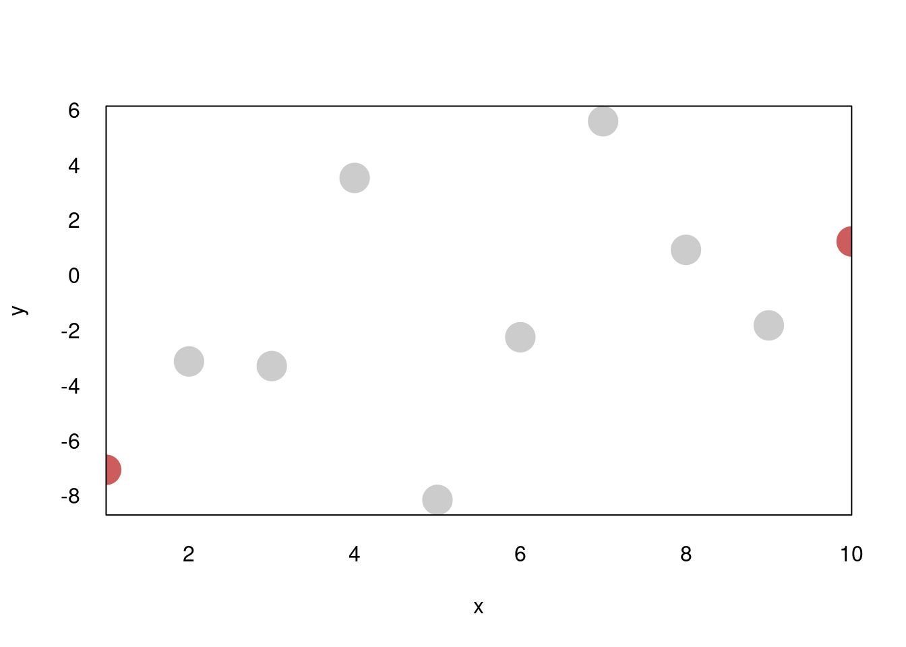

7 System description
This section contains a detailed description of the two software packages developed as part of this doctoral project: (plotscape and plotscaper):
plotscape: Written in TypeScript/JavaScript, provides “low-level” interactive visualization utilitiesplotscaper: Written in R, provides a “high-level” wrapper/API for R users
Web-technologies were chosen because they provide a simple and portable way to do interactive apps in R, having become the de facto standard thanks to good integration that packages such as htmlwidgets (Vaidyanathan et al. 2021) and Shiny (Sievert 2020). The functionality was split across two packages out of practical concerns; rather than relying on some JS-in-R wrapper library, plotscape was implemented in vanilla TypeScript/JavaScript directly, to achieve optimal performance and fine-grained control. plotscaper was then developed to provide a user-friendly R wrapper around plotscape’s functionalities.
As of the time of writing, plotscape comprises of about 6,400 significant lines of code (SLOC; un-minified, primarily TypeScript but also some CSS, includes tests, etc…), and plotscaper contains about 500 SLOC of R code (both counted using cloc). The unpacked size of all files (including minified JS) is about 200 kilobytes for plotscape and 460 kilobytes for plotscaper, which is fairly modest compared to other interactive data visualization alternatives for R1. Both packages have fairly minimal dependencies.
Since the two packages address fairly well-separable concerns - high-level API design vs. low-level interactive visualization utilites - I organize this section accordingly. First, I discuss general, high-level API concerns alongside plotscaper. Second, I delve into the low-level implementation details alongside plotscape. There are of course cross-cutting concerns with both packages and those will be addressed towards ends of the respective sections. However, first, let’s briefly review the core requirement of the package(s).
7.1 Core requirements
To re-iterate, from Section 5, the core requirements for the high-level API (plotscaper) were:
- Provide a framework for creating and manipulating interactive figures geared towards data exploration
- Be accessible to a wide range of users with varying levels of experience
- Integrate well with popular tools within the R ecosystem, such as the RStudio IDE and RMarkdown
These will be the subject of Section 7.2. However, to realize these goals, it was also necessary to design the low-level platform (plotscape) which could support them. The primary purpose of plotscape was to provide utilities for the interactive data visualization pipeline:
- Splitting the data into a hierarchy of partitions
- Computing and transforming summary statistics (e.g. stacking, normalizing)
- Mapping these summaries to visual encodings (e.g. x- and y-axis position, width, height, and area)
- Rendering geometric objects and auxiliary graphical elements
- Responding to user input and server requests, propagating any required updates throughout the pipeline
Section 7.3 will discuss the above-mentioned tasks, and the data structures and algorithms used to support them.
7.2 High-level API (plotscaper)
In Section 5, I already discussed some broad, theoretical ideas related to the package’s functionality. Here, I focus more on the concrete API - what plotscaper code looks like, how are users supposed to understand it, and why was the package designed this way. The goal is to provide a rationale for key design decisions and choices.
7.2.1 API design
As mentioned in Section 5, a primary inspiration for plotscaper’s API was the popular R package ggplot2. In ggplot2, plots are created by chaining together a series of function calls, each adding or modifying a component of an immutable plot schema:
library(ggplot2)
# In ggplot, plots are created by chaining a series of function calls
ggplot(mtcars, aes(wt, mpg)) +
geom_point() + # The overloaded `+` operator serves to compose these calls
scale_x_continuous(limits = c(0, 10))# The call to ggplot() creates an immutable plot schema object
plot1 <- ggplot(mtcars, aes(wt, mpg))
names(plot1)## [1] "data" "layers" "scales" "guides" "mapping" "theme" "coordinates" "facet" "plot_env"
## [10] "layout" "labels"## [1] 0# Adding components such as geoms returns a new schema object
plot2 <- ggplot(mtcars, aes(wt, mpg)) + geom_point()
names(plot2)## [1] "data" "layers" "scales" "guides" "mapping" "theme" "coordinates" "facet" "plot_env"
## [10] "layout" "labels"## [1] 1ggplot2 is well-loved by R users, as evidenced by the package’s popularity. However, its API presents certain limitations when building interactive figures. Specifically:
- Its design primarily focuses on individual plots. While facetting does make it possible to create multi-panel figures consisting of repeats of the same plot type (see
facet_wrap()andfacet_grid(), Wickham 2016), multi-panel figures with mixed plot types require the use of external packages such asgridExtra(Auguie 2017) orpatchwork(Pedersen 2024). As discussed in Section 3, in interactive graphics, multi-panel figures composed of different plot types are essential, and as such, the single-plot model ofggplot2is not sufficient. - While the immutable schema model works well for static graphics, in interactive graphics, the ability to modify an already rendered figure can be extremely useful. For example, by directly mutating the figure state via a function call, we can easily set an interactive histogram binwidth to a precise value, rather than having to rely on some imprecise widgets/controls such as a slider.
- Many of the
ggplot2’s core functions make heavy use of quotation and non-standard evaluation (NSE, Wickham 2019). While this style is fairly popular within the R ecosystem and does offer certain elegance/syntactic conciseness, it also complicates programmatic use (Wickham 2019). For instance, inggplot2, to plot all pairwise combinations of the variables in a dataframe, we cannot simply loop over their names and supply these as arguments to the defaultaesfunction - instead, we have to parse the names within the dataframe’s environment (this is what the specializedaes_stringfunction does). Again, in interactive contexts, the ability to easily manipulate figures with code is often highly desirable, and this makes NSE a hindrance (more on this later).
- The package was developed before widespread adoption of the pipe operator (both
%*%frommagrittr, Bache and Wickham 2022; and the native R|>pipe, R Core Team 2024) and its use of the overloaded+operator is a noted design flaw (see Wickham, Hadley 2014).
To address the single-plot focus limitation, a function-chaining approach similar to ggplot2 was adopted, however, with a focus on multi-panel figure composition. Functions primarily target the entire figure, adding or removing plots. However, specialized functions with selectors can also be used to modify individual plots. To enable mutable figure modification while retaining the benefits of immutability, most functions accept both immutable schemas and references to live figures (details in the following section). Finally, non-standard evaluation was avoided altogether, and functions can be composed using any valid pipe operator (in my examples, I prefer the base R |> operator).
7.2.2 Basic example of plotscaper code
The code below shows a basic example of an interactive figure. More advanced and realistic applications are shown in Section 8; this is example is only meant to provide a simple illustration of how interactive figures are built with plotscaper:
library(plotscaper)
create_schema(mtcars) |>
add_scatterplot(c("wt", "mpg")) |>
add_barplot(c("cyl")) |>
set_scale("plot1", "x", min = 0) |>
render()
Figure 7.1: An example of a simple interactive figure in plotscaper.
We first initialize the figure schema by calling create_schema() with the input data. Next, we chain a series of add_*() calls, adding individual plots. Further, we can also manipulate attributes of individual plots, by using, for instance, the set_scale() function to set the lower x-axis limit of the scatterplot to zero. All of these functions append instructions to the schema (more on that later, in Section 7.2.3). Finally, the schema is instantiated into a figure via the call to render(). There are several features of this process that bear explaining.
7.2.2.1 Figure vs. plot and selectors
First, note that, as discussed in Section 7.2.1, all functions take as their first argument the entire figure and most also manipulate it, unlike in ggplot2 where the first argument is typically the schema of a single plot (unless when faceting is used). Thus the fundamental object being manipulated is the entire figure, rather than a single plot. Consequently, this design also necessitates the use of selectors for targeting individual plots, as seen in the set_scale() call above. I decided to use a simple string selector for this purpose. While alternative selection strategies, such as overloading the extraction ($) operator or using a separate selector function were considered, these all presented their own sets of trade-offs. In the end, I found the string selector to be the simplest and most straightforward solution. However, this design choice is open to being revisited in future major releases of the package.
7.2.2.2 Variable names
Second, variable names are specified by simple string vectors. Formally, this means that the function arguments are not quoted (which is a bit unfortunate terminology since they are surrounded by quotation marks), i.e. in plotscaper we write add_scatterplot(c("x", "y", "z")) instead of add_scatterplot(c(x, y, z)). While this style may be less familiar to some R users, and it does mean that, generally, specifying an encoding does require two extra key strokes, I believe the simplicity of using plotscaper programmatically makes it a worthwhile trade-off. For instance, in plotscaper, we can easily create an interactive scatterplot matrix (SPLOM) like so:
column_names <- names(mtcars)[c(1, 3, 4)]
schema <- create_schema(mtcars)
for (i in column_names) {
for (j in column_names) {
if (i == j) schema <- add_histogram(schema, c(i))
else schema <- add_scatterplot(schema, c(i, j))
}
}
schema |> render()Figure 7.2: An example of a programmatically-created figure (a scatterplot matrix).
While Figure ?? could also be of course replicated with quotation/NSE, doing so may require knowledge of advanced R. While it is the case that many R users are used to the style of calling functions with “naked” variable names, a lot fewer likely posses the ability to write and manipulate these functions effectively. Even more fundamentally, R’s NSE is a form of meta-programming (Wickham 2019), which, despite its power, is often discouraged due to its potential impact on performance, safety, and readability (see e.g. Phung, Sands, and Chudnov 2009; the discussion at Handmade Hero 2025). To encourage programmatic use of plotscaper, I chose simple string vectors over quoted arguments, as the inherent trade-off just did not seem worth it.
7.2.2.3 Variables and encodings
Third, note that, unlike in ggplot2, variable names are not meant to map directly to aesthetics such as x- or y-axis position or size. The reason for this is that, unlike ggplot2, plotscaper does not try to establish a direct correspondence between variables in the original data and the visual encodings/aesthetics. This is due to the fact that, in many common plot types, aesthetics do not represent variables found in the original data, but instead ones which have been derived in some way. Take, for instance, the following ggplot() call:
## `stat_bin()` using `bins = 30`. Pick better value with `binwidth`.
Overtly, it may seem as if the aes function simply maps the mpg variable to the x-axis. However, this is not correct. Specifically, what is actually mapped to the x-axis are the left and right edges of the histogram bins. These represent derived variables not found in the original data. Likewise, the y-axis variable represents counts within bins which are also a derived variable, and its mapping is created only implicitly. It is easier to see this lack of a direct correspondence when we set custom histogram breaks:

Now it is easier to see that what gets mapped to the x-axis is not the mpg variable, but instead a variable entirely external to the data: the histogram breaks. The mpg variable gets mapped to the plot only implicitly, by providing support for the binning. Thus, in ggplot2, the semantics of aes(x = mpg, ...) are completely different with geom_histogram() as compared to, for example, geom_scatter().
This may seem like a minor nitpick, however, it is in fact a fundamental gap in the design. As discussed in Section 4, ggplot2 is based on the Grammar of Graphics model (Wilkinson 2012), which centers around the idea of composing plots out of independent, modular components. The fact that the semantics of aes() are tied to the geom (and stat) means that the apparent modularity of ggplot2 components is a mere illusion.
So what to do? To be perfectly frank, I do not have a perfect solution. In Section 4, I demonstrated that, in the general case involving transformation like stacking, stats and geoms cannot be truly independent. Ignoring that, the problem with specifying the aesthetics in a histogram is that, in some sense, we are putting the cart before the horse: ultimately, we want to plot derived variables, so we should specify these in the call to aes(), however, we do not know what these variables will be before we add geom_histogram(). So the schema should really be organized differently. As per Section 4, we could mirror the data visualization pipeline by doing something like:
In fact, in broad strokes, this is how the data visualization pipeline is implemented in plotscape (see Section 7.3).
However, this model does have one significant downside: it does not lend itself to a simple declarative schema like that of ggplot2. I have tried to coming up with such a schema, however, my efforts were largely unsuccessful. As a result, I opted in for the more traditional, nominal style of specifying plots in plotscaper, using the various add_* functions. While this style may seem less flexible, I hope I have made the case here that the underlying limitations are not an exclusive to plotscape/plotscaper, but extend to ggplot2 and all other GoG-based data visualization systems. I have simply chosen to leave these limitations explicit, and again, if a solution is found, it can be integrated into future releases of the package.
A final point to mention is that, it could be argued that the benefit of the ggplot2 model where partitioning and aggregation logic is implicitly tied to the geoms is that it makes it easier to mix different kinds of
7.2.3 The scene and the schema
A key part of the plotscaper API is the distinction between two classes of objects representing figures: schemas and scenes. Put simply, a schema is an immutable ledger or blueprint, while a scene is a live, rendered version of the figure. Both can be manipulated using (largely) the same set of functions/methods, however, what these functions actually do changes based on their target.
As shown before, schema can be created with the create_schema() function:
## plotscaper schema:
## add-plot { type: scatter, variables: c("wt", "mpg") }
## add-plot { type: bar, variables: cyl }## List of 2
## $ :List of 2
## ..$ type: chr "add-plot"
## ..$ data:List of 3
## .. ..$ type : 'scalar' chr "scatter"
## .. ..$ variables: chr [1:2] "wt" "mpg"
## .. ..$ id : 'scalar' chr "0342fed7-5d50-4dd2-9a10-42c28381a5a1"
## $ :List of 2
## ..$ type: chr "add-plot"
## ..$ data:List of 3
## .. ..$ type : 'scalar' chr "bar"
## .. ..$ variables: chr "cyl"
## .. ..$ id : 'scalar' chr "b20db2ec-46dd-47e9-9150-a932941fef6a"As you can see, the object created with create_schema() is essentially just a list() of messages. Modifying the schema by calling functions such as add_scatterplot() or set_scale() simply appends a new message to the list, similar to how objects of class ggplot are modified by the corresponding functions and the + operator in ggplot2 (Wickham 2016). This design makes the schema easy to transport (e.g. as JSON) and modify programmatically. Finally, rendering the schema into a figure requires an explicit call to render(). Note that this approach is different from the popular style of implicit rendering (used in e.g. ggplot2), where an object is rendered via an overloaded print() method; however, there is a good reason for this which will be discussed later.
The call to render() turns the schema gets turned into a live, interactive figure by constructing an htmlwidgets widget (Vaidyanathan et al. 2021). This bundles up the underlying data and plotscape code (JavaScript, HTML, CSS) into a standalone widget which may get rendered inside, for example, RStudio viewer or RMarkdown document. All of the schema messages also get forwarded to the widget and applied sequentially, creating the figure.
Note that, under this model, the schema merely records state-generating steps, not the state itself, and all of the actual state lives on the scene. This design avoids state duplication between the R session (server) and web-browser-based figure (client), eliminating the need for synchronization. While this client-heavy approach deviates from typical client-server architectures, where state predominantly resides on the server, it is essential for achieving responsive interactive visualizations. By keeping most of the state and computation on the client and avoiding round-trips to the server, we can achieve fast updates in response to user interaction (such as mouse movement during linked selection; this is also why features like linked selection tend to have poor performance in server-centric frameworks like Shiny, Chang et al. 2024). Conversely, as will be discussed below, while the R session (server) may occasionally send and receive messages, these are by comparison much less latency-sensitive, making a “thin” server perfectly viable.
7.2.4 Client-server communication
While inside an interactive R session (e.g., in RStudio IDE (Posit 2024)), creating a plotscaper figure via calling render() also automatically launches a WebSockets server (using the httpuv package, Cheng et al. 2024). This server allows for live, two-way communication between the R session (server) and the figure (client). By assigning the output of render() to a variable, users can save a handle to this server, and call functions which query the figure’s state or cause mutable, live updates. For instance:
# The code in this chunk is NOT EVALUATED -
# it only works only inside interactive R sessions,
# not inside static RMarkdown/bookdown documents.
scene <- create_schema(mtcars) |>
add_scatterplot(c("wt", "mpg")) |>
add_barplot(c("cyl")) |>
render()
# Render the scene
scene
# Add a histogram, modifying the figure in-place
scene |> add_histogram(c("disp"))
# Set the scatterplot's lower x-axis limit to 0 (also in-place)
scene |> set_scale("plot1", "x", min = 0)
# Select cases corresponding to rows 1 to 10
scene |> select_cases(1:10)
# Query selected cases - returns the corresponding
# as a numeric vector which can be used in other
# functions or printed to the console
scene |> selected_cases() # [1] 1 2 3 4 5 6 7 8 9 10As noted earlier, most plotscaper functions are polymorphic S3 methods which can accept either a schema or a scene as the first argument. When called with schema as the first argument, they append a message to the schema, whereas when called with scene as the first argument (and while inside an interactive R session), they send a WebSockets request through the httpuv server, causing a live-update the figure or the server to respond back with data. In more abstract terms, with respect to these functions, the process of rendering a schema is a functor/homomorphism, meaning that we can either call the functions on the schema and then render it, or immediately render the figure and then call the functions, and the result will be the same (provided no user interaction happens in the meantime). The one exception to this rule are state-querying functions such as selected_cases(), assigned_cases(), and get_scale(). These functions send a request to retrieve the rendered figure’s state and so it makes little sense to call them on the schema2.
7.2.5 HTML embedding
As htmlwidgets widgets, plotscaper figures are essentially static webpages. As such, they can be statically embedded in HTML documents such as those produced by RMarkdown (Allaire et al. 2024) or Quarto (Allaire and Dervieux 2024). More specifically, when a plotscaper figure is rendered, htmlwidgets (Vaidyanathan et al. 2021) is used to bundle the underlying HTML, CSS and JavaScript. The resulting widget can then be statically embedded in any valid HTML document, or saved as a standalone HTML file using the htlwidgets::saveWidget function. This is in fact how plotscaper figures are rendered in the present thesis.
As mentioned above, since client-server communication requires a running server, statically rendered figures cannot be interacted with through code, in the way described in Section 7.2.4. However, within-figure interactive features such as linked selection and querying are entirely client-side, and as such work perfectly fine in static environments. This makes plotscaper a very useful and convenient tool to use in interactive reports.
7.3 Low-level implementation (plotscape)
This section describes the actual platform used to produce and manipulate interactive figures, as implemented in plotscape. I first discuss some key implementation details, including reactivity and rendering. Then I provide a detailed listing of the system’s components and their functionality.
Key concepts are explained via example code chunks. All of these represent valid TypeScript code, and selected examples are even evaluated, using the Bun runtime (“Bun” 2025). The reason why TypeScript was chosen over R is that many of the examples are much clearer with explicit type signatures. Further, since plotscape is written in TypeScript, many of the examples are taken directly from the codebase, albeit sometimes modified for consistency or conciseness.
A note on the coding style used in the examples. Many of the code examples use TypeScript’s namespace feature to bundle related functionality together, similar to how a class bundles data and behaviour together in object-orient programming (OOP), however, unlike in OOP, the namespace serves purely as a static container unlike a class which has to be instantiated3. Further, alongside a given namespace, many examples also include a type (interface) of the same name. TypeScript allows type and value overloading, such that a type (e.g. interface Foo {}) and a runtime variable (const Foo = 123) with the same name can exist simultaneously, within the same scope. Namespaces are runtime variables and so they do not clash with types names.
This type-namespace style may seem like object-oriented programming (OOP) with extra steps, i.e. where someone might write const foo = new Foo(); const bar = foo.bar(), I write const foo = Foo.create(); const bar = Foo.bar(foo), however, I did choose this style for a reason. First, thanks to TypeScript’s structural typing, the functions exported from a namespace can be called with any variables that match type signature, not just class instances. This greatly increases code reusability. Second, this approach also promotes functions that operate on plain data, which simplifies reasoning: data and code can be considered separately, and one can exist perfectly fine in the absence of the other4. Finally, this data-oriented approach also avoids a hidden cost of OOP: to support runtime polymorphism, class instances have to store pointers to virtual method tables, increasing their size and the potential for cache misses. Plain data structures are often more performant when polymorphism is not required, and in the specific situations where it is, alternative runtime dispatch methods can still be implemented. Thus, for these reasons, I chose to use this style when implementing plotscape and use it here as well for consistency.
7.3.1 Reactivity
A key implementation detail of all interactive applications is reactivity: how a system responds to input and propagates changes. However, despite the fact that interactive user interfaces (UIs) have been around for a long time, there still exist many different, competing approaches to handling reactivity. A particularly famous5 example of this is the web ecosystem, where new UI frameworks seem to keep emerging all the time, each offering its unique spin on reactivity (see e.g. Ollila, Mäkitalo, and Mikkonen 2022). This makes choosing the right reactivity model challenging.
Furthermore, reactivity is paramount in interactive data visualization systems due to many user interactions having cascading effects. For instance, when a user changes the binwidth of an interactive histogram, the counts within the bins need to be recomputed, which in turn means that scales may need to be updated, which in turn means that the entire figure may need to be re-rendered, and so on. Also, unlike other types of UI applications, interactive data visualizations have no upper bound on the number of UI elements - the more data the user can visualize the better. This makes efficient updates crucial. While re-rendering a button twice may not be a big deal for a simple webpage or GUI application, unnecessary re-renders of a scatterplot with tens-of-thousands of data points may cripple an interactive data visualization system.
Because of the reasons outlined above, reactivity was key concern for plotscape. While developing the package, I had evaluated and tried out several different reactivity models, before finally settling on a solution. Given the time and effort invested in this process, I believe it is valuable to give a brief overview of these models and discuss their inherent advantages and disadvantages, before presenting my chosen approach in Section 7.3.1.5.
7.3.1.1 Observer pattern
One of the simplest and most well-known methods for modeling reactivity is the Observer pattern (Gamma et al. 1995). Here’s a simple implementation:
// Observer.ts
export namespace Observer {
export function create<T>(x: T): T & Observer {
return { ...x, listeners: {} };
}
export function listen(x: Observer, event: string, callback: () => void) {
if (!x.listeners[event]) x.listeners[event] = [];
x.listeners[event].push(callback);
}
export function dispatch(x: Observer, event: string) {
if (!x.listeners[event]) return;
for (const cb of x.listeners[event]) cb();
}
}
const person = Observer.create({ name: `Joe`, age: 25 });
Observer.listen(person, `age-increased`, () =>
console.log(`${person.name} is now ${person.age} years old.`)
);
person.age = 26;
Observer.dispatch(person, `age-increased`);## Joe is now 26 years old.Internally, an Observer object stores a dictionary where the keys are the events that the object can dispatch or notify its listeners of, and values are arrays of callbacks6. Listeners listen (or “subscribe”) to specific events by adding their callbacks to the relevant array. When an event occurs, the callbacks in the appropriate array are iterated through and executed in order.
The Observer pattern easy to implement and understand, and, compared to alternatives, also tends to be fairly performant. However, a key downside is that the listeners have to subscribe to the Observer manually. In other words, whenever client code uses Observer values, it needs to be aware of this fact and subscribe to them in order to avoid becoming stale. Further, the logic for synchronizing updates has to be implemented manually as well. For instance, by default, there is no mechanism for handling dispatch order: the listeners who were subscribed earlier in the code are called first7. Moreover, shared dependencies can cause glitches and these have to be resolved manually as well. See for instance the following example:
import { Observer } from "./Observer"
function update(x: { name: string; value: number } & Observer, value: number) {
x.value = value;
console.log(`${x.name} updated to`, x.value);
Observer.dispatch(x, `updated`);
}
const A = Observer.create({ name: `A`, value: 1 });
const B = Observer.create({ name: `B`, value: A.value * 10 });
const C = Observer.create({ name: `C`, value: A.value + B.value });
Observer.listen(A, `updated`, () => update(B, A.value * 10));
Observer.listen(A, `updated`, () => update(C, A.value + B.value));
Observer.listen(B, `updated`, () => update(C, A.value + B.value));
update(A, 2); // C will get updated twice## Joe is now 26 years old.
## A updated to 2
## B updated to 20
## C updated to 22
## C updated to 22The example above shows what is in reactive programming known as the diamond problem. We have three reactive variables A, B, and C, such that B depends on A, and C depends simultaneously on A and B. Since C depends on A and B, it has to subscribe to both. However, C is not aware of the global context of the reactive graph: it does not know that B will update any time A does. As such, an update to A will trigger two updates to C despite the fact that, intuitively, it should only cause one.
Without careful management of dependencies, this reactive graph myopia that the Observer pattern exhibits can create computational bottlenecks, particularly in high-throughput UIs such as interactive data visualizations. Consider an interactive histogram where users can either modify binwidth or directly set breaks. If both are implemented as reactive parameters, a poorly managed dependency graph (e.g., breaks dependent on binwidth, and rendering dependent on both) will result in unnecessary re-renders, impacting performance at high data volumes.
7.3.1.2 Streams
A radically different approach to reactivity is offered by streams (see e.g. Abelson and Sussman 2022). Instead of events directly modifying data state, streams separate event generation from event processing, modeling the latter as pure, primarily side-effect-free transformations. These transformations can then be composed via usual function composition to build arbitrarily complex processing logic. Finally, due to the separation between the stateful event producers and stateless event transformations, this approach aligns closely with methods such as generators/iterators as well as functional programming more broadly (Abelson and Sussman 2022; Fogus 2013), and has implementations in numerous functional programming languages and libraries, most notably the polyglot Reactive Extensions library (also known as ReactiveX, Rxteam 2024).
Consider the following implementation of a stream which produces values at 200-millisecond intervals and stops after 1 second:
function intervalSteam(milliseconds: number, stopTime: number) {
let streamfn = (x: unknown) => x;
const result = { pipe };
function pipe(fn: (x: any) => unknown) {
const oldStreamfn = streamfn;
streamfn = (x: unknown) => fn(oldStreamfn(x));
return result;
}
const startTime = Date.now();
let time = Date.now();
const interval = setInterval(() => {
time = Date.now();
const diff = time - startTime;
if (diff >= stopTime) clearInterval(interval);
streamfn(diff);
}, milliseconds);
return result;
}
const stream = intervalSteam(200, 1000)
stream
.pipe((x) => [x, Math.round((x / 7) * 100) / 100])
.pipe((x) =>
console.log(
`${x[0]} milliseconds has elapsed (${x[1]} milliseconds in dog years)`
)
);## 202 milliseconds has elapsed (28.86 milliseconds in dog years)
## 401 milliseconds has elapsed (57.29 milliseconds in dog years)
## 602 milliseconds has elapsed (86 milliseconds in dog years)
## 802 milliseconds has elapsed (114.57 milliseconds in dog years)
## 1003 milliseconds has elapsed (143.29 milliseconds in dog years)As you can see, the event producer (stream) is defined separately from the event processing logic, which is constructed by piping the result of one operation into the next. Because of the associativity of function composition, the stream actually exhibits properties of a functor, meaning that the order of composition - either through direct function composition or .pipe() chaining - does not affect the result. Additionally, while the stream transformations themselves are (generally) stateless, they can still produce useful side-effects (as can be seen on the example of the console.log call above). Further, because of this fact, they also lend themselves well to modeling asynchronous or even infinite data sequences (Abelson and Sussman 2022; Fogus 2013).
While streams can be extremely useful in specific circumstances, their utility as a general model for complex UIs (beyond asynchronous operations) is debatable. Specifically, the inherent statefulness of UIs conflicts with the stateless nature of streams: stateless computations inside the stream have to leak into the rest of the application somewhere. Delineating which parts of the logic should go into streams versus which should be bound to UI components complicates development for little real benefit. Consequently, streams are likely not the optimal choice for interactive data visualization, where some state is unavoidable.
7.3.1.3 Virtual DOM
Within the web ecosystem, a common way of handling reactivity involves something called the virtual DOM (VDOM). This approach, popularized by web frameworks such as React (Meta 2024) and Vue (Evan You and the Vue Core Team 2024), involves constructing an independent in-memory tree structure which provides a virtual representation of the UI. Reactive events are bound to nodes or “components” of this tree. Whenever an event occurs, changes cascade throughout the VDOM, starting with the associated component and propagating down through its children. Finally, the VDOM is compared or “diffed” against the actual UI, and only the necessary updates are applied. Note that, despite being named after the web’s DOM, the VDOM is a general concept, not tied to any specific programming environment.
The VDOM provides a simple and convenient solution to reactive graph challenges such as the diamond problem described in Section 7.3.1.1, as evidenced by the massive popularity of web frameworks such as React or Vue. However, compared to alternatives, it also presents some significant performance trade-offs. Specifically, events near the root component trigger a cascade of updates which propagates throughout a large portion of the tree, even when there is no direct dependence between these events and the child components. Moreover, since the only way for two components to share a piece of state is through their parent, the model naturally encourages a top-heavy hierarchy, further compounding the issue. Finally, depending on the nature and implementation of the UI, the diffing process may be more trouble than its worth: while in a webpage, updating a button or two is a fast operation, in a data visualization system, it may be more efficient to re-render an entire scatterplot from scratch rather than trying to update select few points.
7.3.1.4 Signals
Another approach to reactivity that has been steadily gaining traction over the recent years, particularly within the web ecosystem, are signals (also known as fine-grained reactivity). Popularized by frameworks such Knockout (knockoutjs 2019) and more recently Solid JS (Solid Core Team 2025), this approach has recently seen a wave adoptions by many other frameworks including Svelte (Rich Harris and the Svelte Core Team 2024) and Angular (Google 2025), and has even seen adoption outside of the JavaScript ecosystem, such as in the Rust-based framework Leptos (Leptos Core Team 2025).
Signal-based reactivity is built around a core pair of primitives: signals and effects. Signals are reactive values which keep track of their listeners, similar to the Observer pattern (Section 7.3.1.1). However, unlike Observers, signals do not need to be subscribed to manually. Instead, listeners automatically subscribe to signals by accessing them, which is where effects come in. Effects are side-effect-causing functions which respond to signal changes, typically by updating the UI, and play a key role in the signal-based automatic subscription model.
While signal-based reactivity might appear complex, its basic implementation is surprisingly straightforward. The following example is based on a presentation by Ryan Carniato, the creator of Solid JS (2023):
export namespace Signal {
export function create<T>(x: T): [() => T, (value: T) => void] {
// A set of listeners, similar to Observable
const listeners = new Set<() => void>();
function get(): T {
listeners.add(Effect.getCurrent());
return x;
}
function set(value: T) {
x = value;
for (const l of listeners) l();
}
// Returns a getter-setter pair
return [get, set];
}
}
export namespace Effect {
const effectStack = [] as (() => void)[]; // A stack of effects
export function getCurrent(): () => void {
return effectStack[effectStack.length - 1];
}
export function create(effectfn: () => void) {
function execute() {
effectStack.push(execute); // Pushes itself onto the stack
effectfn(); // Runs the effect
effectStack.pop(); // Pops itself off the stack
}
execute();
}
}
const [price, setPrice] = Signal.create(100);
const [tax, setTax] = Signal.create(0.15);
const priceWithTax = () => Math.round(price() * (1 + tax()) * 100) / 100;
// ^ Derived values automatically become signals as well
Effect.create(() =>
console.log(
`The current price is` +
`${priceWithTax()}` +
`(${price()} before ${tax() * 100}% tax)`
)
);
setPrice(200);
setTax(0.12);## The current price is115(100 before 15% tax)
## The current price is230(200 before 15% tax)
## The current price is224(200 before 12% tax)The key detail to notice is the presence of the global stack of effects. Whenever an effect is called, it first pushes itself onto the stack. It then executes, accessing any signals it needs along the way. These signals in turn register the effect as a listener, by accessing it as the top-most element of the effect stack. When the effect is done executing, it pops itself off the stack. Now, whenever one of the accessed signals changes, the effect re-runs again. Crucially, making a derived reactive value is as simple as writing a callback: if an effect calls a function using a signal, it also automatically subscribes to that signal (see the example of priceWithTax() above). Importantly, the effect subscribes only to this signal and not the derived value itself. In other words, effects only ever subscribe to the leaf nodes of the reactive graph (signals). Derived values computed on the fly (and, if necessary, can be easily memoized8), and event ordering is simply managed via the runtime call stack.
Signals provide an elegant solution to many problems with reactivity. They automate subscription to events, prevent unnecessary updates, ensure correct update order, and, due to their fine-grained nature, are generally highly performant compared to more cumbersome methods like the virtual DOM. However, again, signals do also introduce their own set of trade-offs. Chief among these, signal’s reliance on the call stack for event ordering necessitates their implementation as functions (getter-setter pairs), rather than plain data values. While techniques like object getters/setters or templating (as seen in SolidJS, Solid Core Team 2025) can be used to hide this fact, it does nevertheless add an extra layer of complexity. Similarly, many features important for performance, like memoization and batching, also require treating signals as distinct from plain data. Having code consist of two sets of entities - plain data and signals - ultimately impacts developer ergonomics.
7.3.1.5 Choice of reactivity model and final thoughts
At the start of the project, I had used the Observer pattern for modeling reactivity. However, I had this idea of letting the users to define reactive parameters that could be used at arbitrary points in the data visualization pipeline. This had led me to explore the various models of reactivity described above, and even do a full rewrite of plotscape with signals at one point.
However, eventually, I ended up going back to the Observer pattern. The primary reason was developer ergonomics. While many properties of signals like automatic subscription seemed appealing, the need to manage both data and signals as distinct entities proved cumbersome. Deciding which components of my system and their properties should be plain data versus signals added an additional developer overhead and complicated refactoring. Furthemore, I also found that, in the interactive data visualization pipeline, reactivity could be aligned with the four discrete steps: partitioning, aggregation, scaling, and rendering. Specifically, reactive values could be introduced in batch right at the start of each of these four steps, simplifying the reactive graph as well as the overall mental model. Introducing reactivity at other points seem to offer limited practical benefit. Thus, despite the limitations of the Observer pattern, the structured nature of the problem (interactive data visualization pipelines) ultimately makes it a good solution in my eyes.
7.3.2 System components
This section details the code components of plotscape.
7.3.2.1 Indexable
One of the first considerations when implementing a data visualization system is how to represent data. Clearly, we want the ability to handle fixed-length arrays of values, however, we may also want to be able to work with constants and derived values as well. For instance, in a typical barplot, the y-axis base is a constant (typically zero). Rather than appending an array of zeros to the data, using a constant (0) or a thunk (() => 0) is simpler and more memory-efficient. Similarly, arrays of repeated values can be optimized by using two arrays: a short array of unique values or “labels,” and a long array of indices (i.e. what base R’s factor class does). Thus, representing data effectively calls for a generalization of a data “column” which can encompass data types beyond fixed-length arrays.
The generic type Indexable<T> represents such a generalization of a data column. It is simply a union of three basic types:
In plain words, an Indexable<T> can be one of three things:
- A simple (scalar) value
T - A fixed-length array of
T’s - A function which takes an index as an argument and returns a
T.
This is somewhat similar to Leland Wilkinson’s idea of data functions (see Wilkinson 2012, 42), although somewhat more constrained. The key functionality which is abstracted over is indexed access to values. A uniform interface for this functionality is provided by provided by Getters.
7.3.2.2 Getter
A Getter<T> is used to provide a uniform interface to accessing values from an Indexable<T>. It is simply a function which takes an index and returns a value of type T. To construct a Getter<T>, we take an Indexable<T> and dispatch on the underlying subtype. For illustration purposes, here is a simplified implementation:
// Getter.ts
export type Getter<T> = (index: number) => T;
export namespace Getter {
export function of<T>(x: Indexable<T>): Getter<T> {
if (typeof x === `function`) return x;
else if (Array.isArray(x)) return (index: number) => x[index];
else return () => x;
}
}we can then create and use Getters like so:
import { Getter } from "./Getter"
const getter1 = Getter.of([1, 2, 3])
const getter2 = Getter.of(99);
const getter3 = Getter.of((index: number) => index - 1);
console.log(getter1(0));
console.log(getter2(0));
console.log(getter3(0));## 1
## 99
## -1Note that, by definition, every Getter<T> is also automatically an Indexable<T> (since it is a callback (index: number) => T). This means that we can create new getters out of other getters.
There are also several utility functions for working with and constructing Getters. The first is Getter.constant which takes in a value T and returns a thunk which always returns T (i.e. () => T). This is useful, for example, when T is an array and we always want to return the whole array (not just a single element):
import { Getter } from "./Getter"
const getter4 = Getter.constant([`A`, `B`, `C`])
console.log(getter4(0))
console.log(getter4(1))## [ "A", "B", "C" ]
## [ "A", "B", "C" ]Another useful utility function is Getter.proxy, which takes a Getter and an array of indices as input and returns a new Getter which routes the access to the original values through the indices:
import { Getter } from "./Getter"
const proxyGetter = Getter.proxy([`A`, `B`, `C`], [2, 1, 1, 0, 0, 0]);
console.log([0, 1, 2, 3, 4, 5].map(proxyGetter))## [ "C", "B", "B", "A", "A", "A" ]This function becomes particularly useful when implementing other data structures such as Factors.
7.3.2.3 Dataframe
In many data analytic workflows, a fundamental data structure is a dataframe or a two-dimensional table. As mentioned in Section [REFERENCE], we can represent this data structure as either a dictionary of columns or a list of rows, with the column-wise representation having some advantages for analytical workflows. Thus, in plotscape, a Dataframe is a dictionary columns, with the extra twist that the columns don’t have to be fixed-length arrays but instead Indexables:
For example, the following is a valid instance of a Dataframe:
const data = {
name: [`john`, `jenny`, `michael`],
age: [17, 24, 21],
isStudent: true,
canDrive: (index: number) => data.age[index] > 18,
};Most functions in plotscape operate column-wise, however, here’s how the dataframe above would look like as a list of rows if we materialized using a hypothetical Dataframe.rows() function:
import { Dataframe } from "./Dataframe"
const data = {
name: [`john`, `jenny`, `michael`],
age: [17, 24, 21],
isStudent: true,
canDrive: (index: number) => data.age[index] > 18,
};
console.log(Dataframe.rows(data))## [
## {
## name: "john",
## age: 17,
## isStudent: true,
## canDrive: false,
## }, {
## name: "jenny",
## age: 24,
## isStudent: true,
## canDrive: true,
## }, {
## name: "michael",
## age: 21,
## isStudent: true,
## canDrive: true,
## }
## ]One important thing to mention is that, since a Dataframe can contain different Indexable subtypes as columns, we need to make sure that information about the number of rows is present and non-conflicting. That is, all fixed-length arrays in the data must have the same length, and, if there are non-fixed length variables (constants, derived variables/functions) present, we need to make sure that either at least one fixed-length array is included in the data or the non-fixed length arrays carry appropriate metadata.
While in a traditional OOP style, these length constraints might be enforced as a class invariant during instantiation and within methods, my system adopts a more dynamic approach. Since a Dataframe is a simple dictionary, the length constraints are checked dynamically (via a Dataframe.checkLength() utility function). This occurs whenever the integrity of a Dataframe becomes a key concern, such as when initializing a Scene or when rendering. This style is more in line with JavaScript’s dynamic nature: in JavaScript, class instances are just objects, and there is nothing preventing the users from adding or removing properties at runtime. Further, dataframes with typical dimensionality (fewer columns than rows, \(p << n\)), the performance cost of checking column’s length is negligible when compared to row-wise operations, such as rendering or summary statistics calculations. If performance were to become an issue for high-dimensional datasets (\(p >> n\)), the system could always be enhanced with memoization or caching.
7.3.2.4 Factors
As discussed in Section 4, when visualizing, we often need to split our data into a set of disjoint subsets organized into partitions. Further, as mentioned in Section 4.2.4, these partitions may be organized in a hierarchy, such that multiple subsets in one partition may be unioned together to form another subset in a coarser, parent partition.
Factors provide a way to represent such data partitions and the associated metadata. They are similar to base R’s factor S3 class, although there are some important differences which will be discussed below. Factor has the following interface:
interface Factor<T extends Dataframe> {
cardinality: number;
indices: number[];
data: T
parent?: Factor;
}Here, cardinality represents the number of unique parts that a partitions consists of (e.g. 2 for a binary variable, 3 for a categorical variable with 3 levels, and so on). Data points map to the parts via a “dense” array of indices, which take on values in 0 ... cardinality - 1 and have length equal to the length of the data9. For instance, the following array of indices - [0, 1, 1, 0, 2, 0] - should be interpreted as meaning that the first part is composed of cases one, four, and six, the second part is composed of cases two and three, and the third part is composed of the case five (keeping in mind JavaScript’s zero-based indexing). The data associated with factor’s levels is stored in the data property, which is composed of arrays/Indexables with length equal to the factor’s cardinality. For instance, if a factor is created from a categorical variable with three levels - A, B, and C, then the rows the the data may look something like this: [{ label: "A" }, { label: "B" }, { label: "C" }]. Finally, the optional parent property denotes a factor representing the parent partition.
There are a couple of important things to discuss. First, cardinality technically represents the same information as could be obtained by counting the number of unique values in indices, however, for many operations on Factors, it is beneficial to be able to access the cardinality in constant \(O(1)\) rather than linear \(O(n)\) time that would result from having to loop through the indices. Such is the case, for example, when constructing product factors or when initializing arrays of summaries. Of course, care must be taken to ensure that cardinality and indices stay synchronized under factor transformations.
Second, the part’s metadata is stored in the data of type Dataframe. This represents a departure from e.g. base R’s factor class, where all metadata is stored as a flat vector of levels. For instance:
## [1] (0,5] (0,5] (0,5] (0,5] (0,5] (5,10] (5,10] (5,10] (5,10] (5,10]
## Levels: (0,5] (5,10]With Factor, the same information would be represented as:
const factor: Factor = {
cardinality: 2,
indices: [0, 0, 0, 0, 0, 1, 1, 1, 1, 1],
data: {
binMin: [0, 5],
binMax: [5, 10],
},
};Storing Factor metadata in a Dataframe offers several advantages as opposed to a flat vector/array. First, when partitioning data, we often want to store several distinct pieces of metadata. For example, when we bin numeric variable, like in the example above, we want to store both the lower and upper bound of each part’s bin. cut stores the multiple (two) pieces of metadata as a tuple, however, this approach becomes cumbersome when the dimensionality of the metadata grows. Further, metadata stored in a Dataframe becomes far easier to combine when taking a product of two factors. Since taking products of factors is a fundamental operation, underpinning features such as linked brushing, it makes sense to use metadata representation which facilitates this operation.
While all Factors share the same fundamental structure - a data partition with associated metadata - factors can be created using various constructor functions. These constructor functions differ in what data they take as input and what metadata they store on the ouput, giving rise to several distinct Factor subtypes. These will be the subject of the next few sections.
7.3.2.4.1 Bijection and constant factors
Factor.bijection and Factor.constant are two fairly trival factor constructor. Factor.bijection creates the finest possible data partition by assigning every case to its own part, whereas Factor.constant does the opposite and assigns all cases to a single part. The names of the reflect the mathematical index mapping functions: the bijective function \(f(i) = i\) for Factor.bijection and the constant function \(f(i) = 0\) for Factor.constant. Consequently, the cardinality of Factor.bijection is equal to the length of the data, while the cardinality of Factor.constant is always one. Both can be assigned arbitrary metadata, which must have length equal to the cardinality.
Both functions have essentially the same signature:
function bijection<T extends Dataframe>(n: number, data?: T): Factor<T>
function constant<T extends Dataframe>(n: number, data?: T): Factor<T> In both cases, n represents the length of the data (the number of cases) and data represents arbitrary metadata. The variable n is used to construct an array of indices, which in the case of Factor.bijection is an increasing sequence starting at zero ([0, 1, 2, 3, ..., n - 1]) whereas in the case of Factor.constant it is simply an array of zeroes ([0, 0, 0, 0, ..., 0]). Technically, in this case, having an explicit array of indices is not necessary, and we could implement much of the same functionality via a callback (i.e. (index: number) => index for Factor.bijection and (index: number) => 0 for Factor.constant). However, for many operations involving factors, it is necessary to store the length of the data (n), and while it would be possible to define a separate n/length property on Factor, in the context of other factor types, I found it simpler to allocate the corresponding array. While this does have some small memory cost, there is no computational cost involved, since, by definition, the partition represented by a bijection or constant factor does not change10.
Factor.bijection and Factor.constant their own specific use cases. Factor.bijection represents a one-to-one mapping and this makes it suitable for scatterplots and parallel coordinate plots. In contrast, Factor.constant is useful when we want to compute summaries across the entirety of the data, such as is the case for spinogram11.
As a final interesting side-note, both Factor.bijection and Factor.constant can be interpreted through the lense of category theory, as terminal and initial objects within the category of data partitions, with morphisms representing products between partitions. That is, the product of any factor with a Factor.bijection always yields another Factor.bijection (making this a terminal object), whereas the product of any factor with Factor.constant will simply yield that factor (making this an initial object).
7.3.2.4.2 Discrete factors
Another fairly intuitive factor constructor is Factor.from. It simply takes an array of values which can be coerced to string labels (i.e. have the .toString() method) and creates a discrete factor by treating each unique label as a factor level (this is essentially what base R’s factor class does). This gives rise to the following function signature:
type Stringable = { toString(): string };
function from(x: Stringable[], options?: { labels: string[] }): Factor<{ label: string[] }> When creating a discrete factor with Factor.from, the resulting factor’s length matches the input array x. To compute the factor indices, the constructor needs to be either provided with an array of labels or these will be computed from x directly (by calling the .toString() method and finding all unique values). Assigning indices requires looping through the \(n\) values x and further looping through \(k\) labels, resulting in \(O(n)\) time complexity (assuming \(k\) is constant with respect to the size of the data). The factor metadata simply contains this array of labels (singular form label is used since it is the name of a dataframe column). Each index in indices then simply maps to one label. Finally, for easier inspection, labels may be sorted alphanumerically, though this does not affect computation in any way.
The typical use case for Factor.from is the barplot. Here, we take an array of values, coerce these to string labels (if the values were not strings already), find all unique values, and then create an array of indices mapping the array values to the unique labels. The indices can then be used to subset data when computing summary statistics corresponding to the barplot bars.
7.3.2.4.3 Binned factors
Arrays of continuous values can be turned into factors by binning. Factor.bin is the constructor function used to perform this binning. It has the following signature:
type BinOptions = { breaks?: number[]; nBins?: number; width?: number; anchor?: number; }
function bin(x: number[], options?: BinOptions): Factor<{ binMin: number[]; binMax: number[] }>;Again, as in the case of Factor.from, the length of the factor created with Factor.bin will match the length of x. To compute the factor indices, the values in x need to be assigned to histogram bins delimited by breaks. The breaks are computed based on either default values or the optional list of parameters (options) provided to the construct function. Note that the parameters are not orthogonal: for instance, histogram with a given number of bins (nBins) cannot have an arbitrary binwidth (width) and vice versa. Thus, if a user provides multiple conflicting parameters, they are resolved in the following order: breaks > nBins > width. Finally, the metadata stored on the Factor.bin output includes the limits of each bin binMin and binMax, giving the lower and upper bound of each bin, respectively.
Indices are assigned to bins using a half-open intervals on breaks of the form (l, u], such that a value v is assigned to to a bin given by (l, u] if it is the case that l < v <= u. Assigning indices to bins requires looping through the \(n\) values of x, and further looping through \(k\) breaks12, resulting in \(O(n)\) time complexity (assuming \(k\) is fixed with respect to the size of the data).
An important point to mention is that a naive approach of assigning bins to cases may lead to some bins being left empty, resulting in cardinality which is less than the number of bins and “sparse” indices (gaps in index values). For instance, binning the values [1, 2, 6, 1, 5] with breaks [0, 2, 4, 6] leaves the second bin ((2, 4]) empty, and hence the corresponding index value (1) will be absent from indices. To address this, plotscape performs an additional \(O(n)\) computation to “clean” the indices and ensure that the array is dense (i.e. indices take on values in 0 ... cardinality - 1, and each value appears at least once). While this additional computation may not be strictly necessary (i.e. some other systems may use “sparse” factor representation), I found the dense arrays of indices much easier to work with, particularly when it comes to operations like combining factors via products and subsetting the corresponding data. Further, even though this approach necessitates looping over indices twice, the combined operation still maintains an \(O(n)\) complexity.
7.3.2.4.4 Product factors
As discussed in Section 4.2.3.2, a fundamental operation that underpins many popular types of visualizations, particularly when linked selection is involved, is the Cartesian product of two partitions. That is, assuming we have two Factors which partition our data into parts, we can create a new Factor consists of all unique intersections of those parts.
To illustrate this idea better, take two factors represented by the following data (the data property is omitted for conciseness):
If we take their product, we should end up with the following factor13:
There are a couple of things to note here. First, note that the cardinality of the product factor (4) is greater than either of the cardinalities of the constituent factors (2, 3), but less than the product of the cardinalities (\(2 \cdot 3 = 6\)). This will generally be the case: if the first factor has cardinality \(a\) and the second cardinality \(b\), the product will have cardinality \(c\), such that:
This is all fairly intuitive, however, actually computing the indices of a product factor presents some challenges. A naive idea might be to simply sum/multiply pairs of indices element-wise, however, this approach does not work: the sum/product of two different pairs of indices might produce the same value (e.g. in a product of two factors with cardinalities of \(2\) and \(3\), there are two different ways to get \(4\) as the sum of indices: \(1 + 3\) and \(2 + 2\)). Further, when taking the product of two factors, we may want to preserve the factor order, in the sense that cases associated with lower values of the first factor should get assigned lower indices. Because sums and products are commutative, this does not work.
One crude solution shown in Section 4.2.3.2 is to treat the factor indices as strings and concatenate them elementwise. This works, but produces an unnecessary computational overhead. There is a better way. Assuming we have two factors with cardinalities \(c_1\) and \(c_2\), and two indices \(i_1\) and \(i_2\) corresponding to the same case, we can compute the product index \(i_p\) via the following formula:
\[i_{\text{p}} = \max(c_1, c_2) \cdot i_{\text{1}} + i_{\text{2}}\]
This formula is similar to one discussed in Wickham (2013). Since \(i_1\) takes values in \(0 \ldots c_1 - 1\) and \(i_2\) takes values in \(0 \ldots c_2 - 1\), the product index is guaranteed to be unique. Additionally, since the the index corresponding to the first factor gets multiplied by the maximum of the two cardinalities, it gets assigned a greater “weight”, preserving the relative order of the two factors. See for example the following table for product indices of two factors of cardinalities 2 and 3:
| i2 | i1 | ip |
|---|---|---|
| 0 | 0 | 0 |
| 1 | 0 | 1 |
| 2 | 0 | 2 |
| 0 | 1 | 3 |
| 1 | 1 | 4 |
| 2 | 1 | 5 |
As with binning, there is also the issue of products creating gaps in indices. Again, plotscape solves this by keeping track of the unique product indices and looping through them again to “clean” them, in \(O(n)\). Since we want to retain the factor order, we also have to sort the unique product indices, which may hypothetically have worst-case \(O(n \cdot \log n)\) time complexity (since even with two factors with cardinalities \(c_1, c_2 < n\), there can be \(n\) unique product indices), however, most of the time, the length of the unique product indices will only be a fraction of the length of the data.
Finally, Factor.product is the only factor constructor which actually assigns to the parent property of the output Factor. Specifically, the first factor always gets assigned as the parent of the product, creating a hierarchical structure. Technically, there are situations where a product of two factors is simply a “flat” product and not a hierarchy. This is the case, for example, when taking the product of two binned variables in a 2D histogram - the two factors are conceptually equal. However, in practice, this distinction rarely matters. Any computation involving a flat product can simply ignore the parent property, and the data is for all other intents and purposes equivalent. This similarity of flat and hierarchical products was also noted by Wilkinson, who used the terminology of cross and nest operators (Wilkinson 2012, 61).
7.3.2.5 Reducers
As discussed in Section 4.3, a key challenge when computing statistical summaries in interactive data visualization systems is doing so in a way that preserves the inherent hierarchy in the data. For instance, when stacking bar segments in a barplot that has been partitioned via linked selection, we want the stacking operation to respect the inherent hierarchical relationships between the segments and the bars. Further, as also demonstrated in Section 4.3, this setup suggests particular algebraic structures: groups and monoids.
Reducers and associated data structures and procedures provide a way of addressing this challenge.
7.3.2.5.1 Reducers
A Reducer<T> is simply a data container that stores functionality and metadata associated with a monoid on type T. It has the following interface:
// Reducer.ts
interface Reducer<T> {
name: string;
initialfn: () => T;
reducefn: (prev: T, next: T) => T;
}That is, a Reducer<T> has a name, a zero-argument function (or a “thunk”) producing a value of type T, and a binary function which takes two values of type T and produces another T. The Reducer namespace exports these Reducers. Here are a couple of examples:
export namespace Reducer {
export const sum: Reducer<number> = {
name: `sum`,
initialfn: () => 0,
reducefn: (x, y) => x + y,
};
export const product: Reducer<number> = {
name: `product`,
initialfn: () => 1,
reducefn: (x, y) => x * y,
};
export const max: Reducer<number> = {
name: `max`,
initialfn: () => -Infinity,
reducefn: (x, y) => Math.max(x, y),
};
export const concat: Reducer<string> = {
name: `concat`,
initialfn: () => ``,
reducefn: (x, y) => x + y,
// (string concatenation also uses `+` operator in JavaScript)
};
}For reasons discussed in Section 4.3, a Reducer should be a monoid, meaning that the operation represented by reducefn should be associative, and unital (with respect to initialfn). That is, the following should hold:
reducefn(reducefn(a, b), c) === reducefn(a, reducefn(b, c))
reducefn(a, initialfn()) === reducefn(initialfn(), a) === aThese constraints are not actually enforced by the system: as discussed in Section 4.3.2.6, they would need to be checked with all possible inputs, which is not practical for large input domains such as floating point numbers or strings. However, the Reducer interface should hopefully be evocative of monoids, to users familiar with functional programming.
7.3.2.5.2 Reduced
We can use a Reducer<T> to aggregate or fold an array of values of type T (T[]) over a Factor, resulting in an array of values of type T of the same length as the Factor’s cardinality. The underlying procedure is fairly straightforward and looks something like this:
function reduce<T>(x: T[], factor: Factor, reducer: Reducer<T>): T[] {
const result = Array<T>(factor.cardinality);
// Initialize values
for (let j = 0; j < factor.cardinality; j++) {
result[j] = reducer.initialfn();
}
// Aggregate
for (let i = 0; i < factor.indices.length; i++) {
const index = factor.indices[i];
result[index] = reducer.reducefn(result[index], x[i]);
}
return result;
}After we apply this operation, we could just return the result array T[] as in the example above, however, this is limited. Specifically, as discussed in Section 4.3, in a data visualization system, we rarely want to treat summaries as a simple “flat” array of values. Instead, in order to correctly apply operations like stacking and normalizing, it is necessary for the summaries to “remember” how they have been summarized, over what partition, and which other summaries they relate to, within the hierarchy of summaries. This is what the Reduced data type is for16:
interface Reduced<T = unknown> extends Array<T> {
factor: Factor<T>,
reducer: Reducer<T>,
parent?: Reduced<T>
original?: Reduced<T>
}The way we use Reduced is that we replace the return type of the reduce function, and then, inside the function’s body, we simply assign the Factor and Reducer<T> arguments as the factor and reducer properties to the result, after it’s been computed:
function reduce<T>(x: T[], factor: Factor, reducer: Reducer<T>): Reduced<T> {
...
result.factor = factor;
result.reducer = reducer;
return result
}That is, now we have the factor and reducer stored directly alongside array of summaries for future use when applying later transformations like stacking and normalization. This is also where the optional parent and original properties come in. The parent property refers to an array of summaries on the parent partition/Factor, whereas original refers to the original array of summaries, before any transformations like stacking/normalization have been applied (this is primarily useful when querying).
Speaking of stacking and normalization, the Reduced namespace also exposes the stack, normalize, and shiftLeft functions with the following type signatures:
function stack<T>(reduced: Reduced<T>): Reduced<T>
function normalize<T>(reduced: Reduced<T>, normalizefn: (x: T, y: T) => T): Reduced<T>
function shiftLeft<T>(reduced: Reduced<T>): Reduced<T>These functions all take Reduced as the first argument and compute transformations that make use of the factor, reducer, and parent properties, returning a new Reduced. For instance, the stack function uses the factor property and its corresponding parent property to create an array of indices over which to “stack” the Reduced values, and then does exactly this, using the reducer. Similarly, the normalize function also creates a parent-factor dependent array of indices, and applies a binary function using the values of Reduced and parent, for instance, dividing each value by its parent values (such as is the case in a spineplot or spinogram). The shiftLeft function simply appends the neutral element (reducer.initialfn()) as the first element and removes the last element of Reduced, essentially “shifting” the values leftwards (again, this is used in a spinogram).
7.3.2.5.3 Summaries
With the building blocks of Indexables, Factors, Reducers and Reduceds, we now have everything we need to compute the hierarchy of summaries described in Section 4.3 and more specifically Section 4.3.2.3. The Summaries.of function exported from the Summaries namespace does exactly this:17:
type ReducerTuple<T = unknown> = [Indexable<T>, Reducer<T>];
function of(summaries: Record<string, ReducerTuple>, factors: Factor[]): Dataframe[]The Summaries.of function takes in a dictionary of Indexable-Reducer pairs with matching generic and an array of Factors. It then repeatedly combines the factors pair-wise using Factor.product and then computes summaries for each new product factor using the Indexable-Reducer pairs in summaries. This results in an array of Dataframes with equal length as factors, holding the combined data. For example:
const factor1 = Factor.from([`a`, `a`, `b`, `a`, `b`, `c`])
const factor2 = Factor.product(factor1, Factor.from([0, 0, 0, 1, 1, 1]))
const summaries = { stat: [[10, 12, 9, 15, 11, 10], Reducer.sum] }
const s = Summaries.of(summaries, [factor1, factor2])
Dataframe.rows(s[0]) // [ { label: `a`, stat: 37 }, { label: `b`, stat: 20 }, { label: `c`, stat: 10 } ]
Dataframe.rows(s[1]) // [ { label: `a`, label$: `0`, stat: 22 }, { label: `a`, label$: `1`, stat: 15 }, ... ]This is the overt behavior of the Summaries.of function; however, it also does a couple more things under the hood. First, it links all reduced variables created from summaries with their counterpart on the parent data (i.e. assinging the parent property on the Reduceds). It also sets up a reactive graph, such that when a factor is updated, its corresponding data is updated as well and so are its child factors and their corresponding data.
7.3.2.6 Motivation
When we visualize, we draw summary statistics computed on different parts of the data. For example, when drawing a typical barplot, we split the data based on the levels of some categorical variable, count up the number of cases in each part, and then draw bars of corresponding heights.
In the preceding section, I discussed the component used to represent partitioning of the data into parts: factors. Now it is time to discuss the process of actually computing the statistical summaries representing these parts. Interestingly, while all visualizations rely on this process in one way or another, designing a generic pipeline for doing this presents some surprising challenges.
One such important challenge is displaying coherent visualization. This topic has been discussed in the introduction, in Section [ADD REFERENCE]. Briefly, in order to be a valid representation of the data, an interactive data visualization system should compute and render statistics in such a way that the resulting visualization has correct algebraic properties. As was discussed previously, monoids and groups present a framework for ensuring this, and as such should serve as the backbone of our system.
Another challenge is the hierarchical nature of graphics. In interactive data visualization, it is often desirable to be able to convert one specific plot type into a different representation. For example, a typical barplot represents counts along the y-axis. This is useful for comparing absolute counts, however, it is less useful for comparing proportions. As such, some interactive data visualization systems offer the feature of turning a barplot into a spineplot, a normalized version of the plot where the counts are instead presented along the x-axis, in a stacked order, and the y-axis represents proportion of counts, see Figure 7.3.

Figure 7.3: While barplot and spineplot represent the same underlying summaries, each makes it easier to see different aspects of our data. Barplot (left) makes it easier to compare absolute counts, whereas spineplot (right) makes it easier to compare proportions. Notice that the spineplot makes it much easier to see that the proportions of blue cases in categories B and C are exactly the same.
However, despite the fact that both barplots and spineplots represent the same underlying summaries (counts), turning one into the other is not always a trivial exercise. For example, in ggplot2, it is easy to create a barplot using simple declarative syntax, however, there is no such simple recipe for spineplots - creating the right plot in Figure 7.3 took over 10 lines of external data wrangling code (using standard dplyr syntax).
What is so complicated about spineplots? First of all, both the x- and y-axes represent the same variable: counts. However, the way the variable is used is different:
- Along the x-axis, we stack counts within the levels of a single factor
- Along the y-axis, we stack counts within the levels of a product of two factors and normalize them by the counts within the levels of the parent factor.
In other words, the spineplot forces us to confront the fact that the summaries in our plots form a hierarchy. When we compute the summaries underlying a stacked barplot or spineplot, we are not merely computing a matrix of values where the rows and the columns have no underlying meaning - instead, we are implicitly saying that objects along the x-axis (whole bars) represent a coarser level of partitioning compared with the objects (stacked segments) along the y-axis. The only difference between a barplot and spineplot is, in the barplot, we can get away with treating the two factors as if they were independent (had the same “weight”), whereas in the spineplot this is no longer possible.
This is why in declarative data visualization systems such as ggplot2, certain types of plots like spineplots are difficult to express. In these systems, the data is implicitly partitioned as a “flat” product of the factor variables. This representation is convenient (e.g. for defining aesthetics via a single call to aes()) but makes it impossible to express hierarchical structures such as the one encoded in spineplot.
Thus, ideally, our system should make it easy specify a pipeline where we compute monoidal summaries of our data within a hierarchy of partitions represented by one or more factor variables, apply some transformations to these summaries (possibly across the levels of the hierarchy), and finally map the summaries to some visual attributes.
7.3.3 Scales
To visualize data, we need to be able to translate values from the space of the data to the space of the graphical device (computer screen). In most data visualization systems, this is done by specialized components called scales or coordinate systems (see e.g. Murrell 2005; Wickham 2016; Wilkinson 2012). Scales serve as a bridge between what we have (data) and what we see (visual attributes), allowing us to cross from one domain to the other.
There exists is a fair research on the theoretical properties of scales and how they relate to the mechanisms of visual perception (see e.g. Krzywinski 2013; Michell 1986; Wilkinson 2012; Stevens 1946). However, when it comes to applying this knowledge and implementing scales in concrete data visualization systems, a lot less information is available. And, even when such information is available, it is it is often quite high-level of abstract (for some rare counter-examples, see e.g. Murrell 2005; Ziemkiewicz and Kosara 2009). Thus, the following section is based largely on how scales have been implemented in existing data visualization codebases, such as the ggplot2 R package (Wickham 2016) or d3-scale module of D3 (Observable 2024; also used by Vega Satyanarayan et al. 2015), as well as on personal insights gained while implementing the package.
7.3.3.1 Overview
From a high-level perspective, a scale is just a function \(s: D \to V\) which translates values of the data \(d \in D\) to values of some visual attribute \(v \in V\), such as the x- and y-position, length, area, radius, or color (Wilkinson 2012). This function may or may not be invertible, such that, at times, each value of the visual attribute may be identified with a unique data value (but this is not always the case).
One of the most common and typical cases is a scale where both \(D\) and \(V\) are subsets of the real numbers:
\[s: [d_{min}, d_{max}] \to [v_{min}, v_{max}] \qquad d_{min}, d_{max}, v_{min}, v_{max} \in \mathbb{R}\]
For example, suppose our data takes values in the range from 1 to 10 and we want to plot it along the x-axis, within a 800 pixels wide plotting region. Then, our scale is simply:
\[s_x: [1, 10] \to [0, 800]\]
Now, there is an infinite number of functions that fit this signature. However, one particularly nice and simple candidate is the following function:
Definition 7.1 (Simple linear mapping) \[s(d) = v_{max} + \frac{d - d_{min}}{d_{max} - d_{min}} \cdot (v_{max} - v_{min})\]
if we substitute the concrete values into the formula, this becomes:
\[s_x(d) = 0 + \frac{d - 1}{10 - 1} \cdot (800 - 0) = [(d - 1) / 9] \cdot 800\]
The function acts on the data in the following way:
- \(s_x(1) = (1 - 1) / 9 \cdot 800 = 0\)
- \(s_x(10) = (10 - 1) / 9 \cdot 800 = 800\)
- \(s_x(d) \in (0, 800)\) for any \(d \in (1, 10)\)
That is, the function maps the data value 1 to pixel 0 (left border of the plotting region), value 10 to to pixel 800 (right border of the plotting region), and any value in between 1 and 10 inside the interval 0 to 800, proportionally to where in the data range it is located.
It is relatively simple to translate the formula in 7.1 to code:
// simpleScale.ts
export function simpleScale(
d: number,
dmin: number,
dmax: number,
vmin: number,
vmax: number,
): number {
return vmin + ((d - dmin) / (dmax - dmin)) * (vmax - vmin);
}And indeed, this function works the way we would expect:
import { simpleScale } from "./simpleScale.ts"
console.log(simpleScale(1, 1, 10, 0, 800))
console.log(simpleScale(5.5, 1, 10, 0, 800))
console.log(simpleScale(10, 1, 10, 0, 800))## 0
## 400
## 8007.3.3.2 Limits of modeling scales as simple functions
Simple scale functions like the one above can work fine for basic data visualization systems. However, once we begin adding more features, this design becomes prohibitive. Consider, for example, what happens if we want to:
- Expand the scale limits
- Scale discrete data
- Apply non-linear transformations
- Pan, zoom, reverse, reorder, or otherwise modify the scale interactively
Let’s take the first point as a motivating example. Consider what happens to data points at the limits of the data range under the simple linear mapping:
x <- 1:10
y <- rnorm(10, 0, 5)
col <- ifelse(1:10 %in% c(1, 10), "indianred", "grey80")
plot(x, y, col = col, cex = 3, xaxs = "i")
The plot above shows values scaled using the simple linear mapping along the x-axis, that is, \(s: [1, 10] \to [0, 800]\) (effect of the xaxs = "i" argument). Notice that, since the position of the points representing the values 1 and 10 (highlighted in red) gets mapped to pixel values 0 and 800 (the left and right border of the plot), only half of each point is visible. This is quite undesirable - a fundamental principles of graphical integrity is that our graphics should not arbitrarily downplay or hide certain data points (Tufte 2001). The points at the axis limits are represented by only 1/2 of the area (or less, if at the limits of both axes), making them less salient, and this is especially pernicious since they are likely to be outliers.
To address this problem, most data visualization systems automatically expand the range of the domain by some pre-specified percentage:
# By default, the plot() function automatically expands the x- and y-axis
# limits by approximately 4% on each end, see `xaxs` in ?graphics::par
plot(x, y, col = col, cex = 3)We could achieve similar effect by modifying the simple linear mapping we have defined above and adding an additional argument:
// simpleScale2.ts
export function simpleScale2(
d: number,
dmin: number,
dmax: number,
vmin: number,
vmax: number,
exp: number, // Extra argument
): number {
return (
vmin + (exp / 2 + ((d - dmin) / (dmax - dmin)) * (1 - exp)) * (vmax - vmin)
);
}Now, if we set the exp argument to some positive value, the scaled values get mapped closer to the center of the plotting region. For example, setting exp to 0.2 moves each of the data limits 10% closer to the center of the plotting region:
import { simpleScale2 } from "./simpleScale2.ts"
console.log(simpleScale2(1, 1, 10, 0, 800, 0.2));
console.log(simpleScale2(5.5, 1, 10, 0, 800, 0.2));
console.log(simpleScale2(10, 1, 10, 0, 800, 0.2));## 80
## 400
## 720However, notice that this argument is applied symmetrically. At times, we may want to apply a different margin to each end of the scale. We could solve this by adding two arguments instead of one, e.g. expLeft and expRight, however, at this point, the function signature starts to become unwieldy. If we have to call the function in multiple places, it may become difficult to remember what each individual argument represents. Further, note that by adding arguments, the logic inside the function’s body becomes denser and less readable. Finally, we may want to persist or modify some of the arguments during runtime (such as when panning or zooming). For all of these reasons, it may be a good idea to take a more structured approach and break the function down into several smaller components.
7.3.3.3 Solution: Two-component scales
The linear mapping formula in 7.1 can guide us in decomposing the scale function into smaller, more manageable parts. Let’s look at it again:
\[s(d) = v_{min} + \frac{d - d_{min}}{d_{max} - d_{min}} \cdot (v_{max} - v_{min})\]
If we look closely, we may be able to see that there are two parts to the function:
That is, the linear mapping is composed of two simpler functions:
This leads us to the following definition of a scale:
Definition 7.2 (Scale as composition of two functions) A scale \(s\) can be created by composing:
- A normalize function \(n: D \to [0, 1]\), mapping data to the interval \([0, 1]\)
- An unnormalize function \(u: [0, 1] \to V\), mapping value in \([0, 1]\) to the visual attribute codomain
Such that:
\[s(d) = u(n(d))\]
Note that the terms normalize and unnormalize are arbitrary, however, I think they make for useful labels. They represent 1-D equivalent of vector normalization, mapping a value in the domain to and from a unit interval \([0, 1]\).
For the case of the linear mapping, we could rewrite this in code as follows:
// LinearMap.ts
export namespace LinearMap {
export function normalize(d: number, dmin: number, dmax: number) {
return (d - dmin) / (dmax - dmin);
}
export function unnormalize(p: number, vmin: number, vmax: number) {
return vmin + p * (vmax - vmin);
}
}import { LinearMap } from "./LinearMap.ts"
console.log(LinearMap.normalize(5.5, 1, 10))
console.log(LinearMap.unnormalize(0.5, 0, 800))
console.log(LinearMap.unnormalize(LinearMap.normalize(5.5, 1, 10), 0, 800))## 0.5
## 400
## 400This two component system allows for a clean separation of concerns. Specifically, the normalize function only needs to know how to map the data values to \([0, 1]\). It does not need to be aware of where these normalized data values will be mapped to. Conversely, the unnormalize function only needs to understand how to translate values from \([0, 1]\) to the space of the visual attribute (such as x-axis position).
7.3.3.3.1 Beyond linear maps
Another big advantage of the two-component scale system is that the functions \(n\) and \(u\) do not need to be a simple linear maps anymore. For example, suppose that our data \(D\) takes form of a set of discrete labels, such as \(D = \{ Prague, Vienna, Munich, Salzburg \}\). We can then replace \(n\) with a surjective function \(n: D \to [0, 1]\) such that:
\[n(d) = \begin{cases} 0.2 & \text{if } d = Munich \\ 0.4 & \text{if } d = Prague \\ 0.6 & \text{if } d = Salzburg \\ 0.8 & \text{if } d = Vienna \end{cases}\]
In other words, \(n\) will place values of \(D\) at equidistant points along \([0, 1]\), ordered alphabetically. We can implement this function in code as follows:
// PointMap.ts
export namespace PointMap {
export function normalize(d: string, dlabels: string[]) {
return (dlabels.indexOf(d) + 1) / (dlabels.length + 1)
}
}Since the codomain of \(n\) is still \([0, 1]\), we can compose it with a simple linear mapping \(u\) just as easily as before:
import { LinearMap } from "./LinearMap.ts"
import { PointMap } from "./PointMap.ts"
const labels = ["Munich", "Prague", "Salzburg", "Vienna"];
console.log(PointMap.normalize("Munich", labels));
console.log(LinearMap.unnormalize(PointMap.normalize("Munich", labels), 0, 800));
console.log(LinearMap.unnormalize(PointMap.normalize("Prague", labels), 0, 800));## 0.2
## 160
## 3207.3.3.3.2 Inverses
Additionally, another property of the two-component scale system that can be useful is that, if both \(n\) and \(u\) are invertible, then so is \(s\). That is, we can easily obtain the inverse scale function by inverting the definition from 7.2:
Definition 7.3 (Scale inverse) If a scale \(s\) is composed of invertible functions \(n\) and \(u\), then \(s\) is invertible:
\[s^{-1}(v) = n^{-1}(u^{-1}(v))\]
This is the case for the simple linear map: the normalize and unnormalize functions are actually inverses of each other:
import { LinearMap } from "./LinearMap.ts"
console.log(LinearMap.unnormalize(LinearMap.normalize(300, 0, 500), 0, 500))## 300However, the inverse may not always exist. In practice, this is often the case when the domain of the data \(D\) is smaller than the codomain \([0, 1]\). Take, for example, the discrete point mapping. Since \(D\) is finite but \([0, 1]\) has infinitely many values, there will always be some values in \([0, 1]\) that no \(d \in D\) maps to. For example, if \(D = \{ Munich, Prague, Salzburg, Vienna \}\) and \(Munich\) maps to 0.2, \(Prague\) maps to \(0.4\), and \(Salzburg\) maps to \(0.8\), then there are no cities which map to 0.9, 0.444, or 0.123456789. Conversely, if we get given those numeric values, then there is no obvious way to map them back to the cities.
One thing we can do is to replace the inverse/unnormalize function with a weaker form of inverse, called retraction (Lawvere and Schanuel 2009). Specifically, if we have a normalize function \(n: D \to [0, 1]\), then an unnormalize retraction \(u^*\) will have the property that:
\[u^*(n(d)) = d \qquad \forall d \in D\]
However, the converse doesn’t necessarily hold:
\[\neg \big[ n(u^*(v)) = v \qquad \forall v \in V \big]\]
For example, for the discrete point mapping, a retraction may map a value in \([0, 1]\) to the closest data value \(d \in D\):
// PointMap.ts
export namespace PointMap {
export function normalize(d: string, dlabels: string[]) {
return (dlabels.indexOf(d) + 1) / (dlabels.length + 1)
}
// Retraction - find the closest label
export function unnormalize(p: number, dlabels: string[]) {
const k = Math.round(p * (dlabels.length + 1) - 1)
return dlabels[k]
}
}
const labels = ["Munich", "Prague", "Salzburg", "Vienna"];
const [prague, munich] = ["Prague", "Munich"].map(x => PointMap.normalize(x, labels))
const midpoint = (prague + munich) / 2
// Helper function for stripping away floating point error
const strip = (x: number) => parseFloat(x.toPrecision(12))
console.log(`Midpoint between Munich and Prague: `, strip(midpoint))
console.log(`unnormalize(0.2999): `, PointMap.unnormalize(0.2999, labels))
console.log(`unnormalize(3): `, PointMap.unnormalize(0.3, labels))## Midpoint between Munich and Prague: 0.3
## unnormalize(0.2999): Munich
## unnormalize(3): PragueWhile inverses are always unique (Lawvere and Schanuel 2009; Fong and Spivak 2019), we may be able to come up with many different retractions for any given function. For example, with the discrete point map above, we could use the floor function instead of rounding and assign label to a value in \([0, 1]\) if it is less than the value of the normalized label (but more than the preceding labels).
The non-uniqueness of retractions presents a bit of a dilemma. How do we decide which retraction to use? And, if a certain retractive implementation of unnormalize returns a value, how do we decide if it is the “correct one”?
However, in practice, this is not much of a problem. While developing the package, I found that I’ve only ever had to use the unnormalize function with continuous data (LinearMap), and so the inverse was always well-defined. This is probably also why packages like ggplot2 and D3 can get by without this functionality. However, I still find it helpful to include the unnormalize function as a first class citizen (instead of it being relegated to some special case), both in terms of the mental model and also for debugging.
7.3.3.3.3 Some other remarks about the two-component scale system
It is worth noting that there is nothing inherently special about the interval \([0, 1]\) as the intermediate domain: any finite subset of \(\mathbb{R}\) would do. However, the interval \([0, 1]\) is convenient, both in terms of interpretation as well as for implementation, as we will see later.
Finally, so far I have discussed scales as functions: the scale function, the normalize function, and unnormalize function. Framing scales as composition of functions leads to a nice correspondence between the mathematical definition and the code. However, in practice, it may be more convenient to implement the domain and codomain as objects or classes, as we will also see in the following section. The important point is that, no matter how the two components are represented, each is responsible for translating values from/to its domain and the interval \([0, 1]\).
7.3.3.4 Past implementations of scales
Two-component scale systems such as the one sketched out above are fairly standard across data visualization libraries. For example, in D3 (Bostock, Ogievetsky, and Heer 2011), scales are implemented in a functional style, such that the data domain and the visual attribute codomain are passed as tuples or arrays of values to a higher-order scale* function (such as scaleLinear, scalePoint, or scaleBand), which then returns a new function that can be used for scaling. The domain and codomain can also be changed at a later point, by using the scale*.domain and scale*.range methods respectively (JavaScript functions are objects and can have other functions/methods attached to them).
For illustration, here is an example from the official documentation (Observable 2024):
const x = d3.scaleLinear([10, 130], [0, 960]);
x(20); // 80
const color = d3.scaleLinear([10, 100], ["brown", "steelblue"]);
color(20); // "rgb(154, 52, 57)"
// The domain and codomain can be changed after initialization
const y = d3.scaleLinear().domain([10, 130]); Internally, the scale* functions rely on other specialized functions to translate from its domain to the codomain (such as the normalize() and scale() functions for continuous and discrete/ordinal domains, respectively, and various interpolate() functions for codomains).
Similarly, in ggplot2 (Wickham 2016), scales are built upon the Scale class, with each subtype implementing limits and palette properties. The limits property is a vector which corresponds to the data domain and the palette property is a function which corresponds roughly to the visual codomain (the x- and y-position behave slightly differently, due to being transformed via coordinate systems). Internally, the package uses the rescale function from the scales package (Wickham, Pedersen, and Seidel 2023) to map data values to \([0, 1]\) and then the palette function is responsible for mapping these normalized values to the visual attribute. For illustration, here’s the full definition of the map method on the ScaleContinuous class (I’ve added comments for clarity):
map = function(self, x, limits = self$get_limits()) {
# Limits are just a tuple, rescale maps x to [0, 1]
x <- self$rescale(self$oob(x, range = limits), limits)
uniq <- unique0(x)
# Palette is a function which returns a vector of attribute values
pal <- self$palette(uniq)
scaled <- pal[match(x, uniq)]
ifelse(!is.na(scaled), scaled, self$na.value)
}7.3.3.5 Proposed model of scales
One feature that the models of scales that D3 and ggplot2 rely on is that they both treat the data domain and the visual attribute codomain as different types. In D3, fundamentally different functions are used to translate from \(D \to [0, 1]\) and from \([0, 1] \to V\), and in ggplot2, limits is a simple vector/tuple whereas palette is a function. While these approaches may have some benefits, such as perhaps offering greater flexibility, they also add additional complexity. Specifically, we have to use two different mental models: one when considering the domain and another when considering the codomain. Further, these models of scales only work in one direction: mapping values \(D \to V\). For going the the other way, i.e. mapping \(V \to D\), other specialized functions have to be used.
I propose a model of scales which implements both the domain and the codomain as components of the same type: Expanse. Fundamentally, this makes it so that the only difference between the data domain and the visual attribute codomain is which property of the scale they are assigned to.
Here is a (slightly) simplified version of the Scale interface:
D and V represent the data domain and the visual attribute codomain, respectively.
The two fundamental functions connected to Scale are:
function pushforward<D, V>(scale: Scale<D, V>, value: ValueOf<D>): ValueOf<V>
function pullback<D, V>(scale: Scale<D, V>, value: ValueOf<V>): ValueOf<D>The pushforward function pushes values forward through the scale, first through its domain and then its codomain, and the pullback function pulls values back, first through its codomain and then through its domain. The ValueOf type helper just identifies the type associated with the expanse’s data (e.g. number for a continuous Expanse, string for a discrete Expanse, etc…). I’ve omitted the generic type parameter constraint (<D extends Expanse, V extends Expanse>) for brevity.
Here is a simplified implementation of the two functions:
namespace Scale {
function pushforward<D, V>(scale: Scale<D, V>, value: ValueOf<D>): ValueOf<V> {
const { domain, codomain } = scale;
return Expanse.unnormalize(codomain, Expanse.normalize(domain, value));
}
function pullback<D, V>(scale: Scale<D, V>, value: ValueOf<V>): ValueOf<D> {
const { domain, codomain } = scale;
return Expanse.unnormalize(domain, Expanse.normalize(codomain, value))
}
}We can see that most of the work is done by the two Expanse components: we use domain to translates \(D \to [0, 1]\) and codomain to translate \([0, 1] \to V\). Scale only serves as plumbing, connecting the two together.
I argue that this model provides several benefits. First of all, it makes the code easier to reason about. Since both the domain and codomain are of the same type, we only need to keep a single mental model in mind. Second, if domain and codomain provide inverse functions (unnormalize), we get the inverse scale function \(V \to D\) for free (this is just the pullback function).
However, before we discuss Expanse, there are also some important functionalities that we may want to implement on Scale directly. There are two main reasons for this. First, we may want these functionalities to apply generally, across the various Expanse subtypes. Second, by implementing them on Scale, we can keep the Expanse interface cleaner. These general functionalities will be the subject of the next few sections.
7.3.3.5.1 Zero and one
Recall how in Section 4.4.0.2, we discussed the problem of expanding axis limits to display margins. Clearly, this is something that we also want to be able to do with our two-component scales. However, since we are designing an interactive data visualization system, we also want to be able to do more with axis limits: we want to be able to manipulate them dynamically during runtime, to implement features such as zooming and panning.
In Section 4.4.0.2, we solved the problem of expanding axis limits by adding an additional argument to the simpleScale function. However, as was discussed previously, this approach does not scale well for more featureful implementations of scales. So how should we go about implementing dynamic axis limits in the context of the two-component scale system?
Suppose we want to add margins to a scale where both the domain or codomain are continuous, such as the x-axis in a typical scatterplot. To implement margins, we could either expand the range of the data (the domain) or shrink the range of the visual attribute (the codomain). However, expanding the domain seems like a bad idea - this only works if the domain is continuous, and, clearly, we may want to add margins to discrete scales too, such the the x-axis of a barplot. Shrinking the range of the codomain could work (most visual attributes are continuous), however, we would need to implement some custom logic for when the plot gets resized. Also, by treating codomain differently than the codomain, we would be breaking away from our intention of representing both with the same generic Expanse type.
So what can we do? As was foreshadowed at end of the previous section, we can put the functionality for expanding axis limits directly onto Scale. Specifically, notice that any values passing through a scale are first converted to the interval \([0, 1]\) and then back to the space of either the domain or codomain:
\[D \to [0, 1] \to V\]
If we re-normalize these normalized values in \([0, 1]\), we effectively expand or shrink axis limits without having to touch either the domain or codomain. To give a metaphor, if we imagine Scale as a pipe connecting the domain and codomain, we can manipulate axis limits by stretching or squeezing this pipe, allowing more or less water to flow through.
To actually implement this, we can add two additional parameters to Scale, zero and one:
interface Scale<D extends Expanse, V extends Expanse> {
domain: D
codomain: V
props: { // A dictionary of properties
zero: number
one: number
}
}Now, we can use these two parameters to implement a new version of the pushforward function:
function pushforward<D, V>(scale: Scale<D, V>, value: D): V {
const { domain, codomain, props } = scale;
const { zero, one } = props
let normalized = Expanse.normalize(domain, value)
normalized = zero + normalized * (one - zero) // Re-normalize
return Expanse.unnormalize(codomain, normalized)
}The new function’s body is a bit more dense, however, the only real change is in the line with the comment. When we re-normalize, we scale the normalized value by the (zero - one) range and increment it by zero. In other words, zero tells us the proportion of the codomain range that the minimum data value gets mapped to, and one tells us the proportion of the codomain range that the maximum data value gets mapped to.
For example, suppose we set zero to 0.1 and one to 0.9. Then we have effectively implemented 10% margins on either side of the scale. If our scale has a \([1, 10]\) domain and \([0, 800]\) codomain, this will result in the following mapping:
- The “minimum” data value (1) gets mapped to 10% of the codomain range (80)
- Because
zero + 0 * (one - zero) = zero = 0.1
- Because
- The “maximum” data value (10) gets mapped to 90% of the codomain range (720)
- Because
zero + 1 * (one - zero) = one = 0.9
- Because
Note the quotation marks around the words “minimum” and “maximum” - there is no requirement for the data to be continuous. For example, if the domain is a discrete Expanse which maps the string value "A" to zero, then the pushforward function will map "A" to 10% of the codomain range, just as it did in the case of the continuous domain. Likewise, the codomain could also be discrete - we could use this to implement scales for binned versions of visual attributes such as color or size.
Thus, we can use zero and one to implement margins. However, there is much more we can do with these parameters. First, despite the names, zero and one can both take values less than zero and more than one. For example, suppose we increment both zero and one by the same amount, e.g. we set zero to 0.1 and one to 1.1. Then, the minimum data value will get mapped to the 10% of the codomain range, and the maximum data value will get mapped to 110% of the codomain range (which may lie outside the space representable by the graphic device). If the codomain represents the x-axis position, then we have shifted all of the geometric objects 10% to the right. We have effectively implemented panning:
function move(scale: Scale, amount: number) {
scale.props.zero += amount;
scale.props.one += amount;
}That’s it. We have implemented a functionality for panning which will work no matter if domain translates numbers, strings, or some other more complex data types.
We can also stretch or shrink zero and one in opposite directions. For example, by setting zero to -0.5 and one to 1.5, then the minimum and maximum data values will get mapped 50% below and 50% above the limits of the codomain range, respectively, and the 25 and 75 data percentiles will get mapped to the minimum and maximum of the codomain range. If we apply this to the x- or y-axes, we’ve just implemented zooming.
To be perfectly honest, there’s a bit more ceremony involved with zooming. Specifically, if we don’t start from zero = 0 and one = 1 (e.g. if our plot already has margins or if we’re zooming in multiple levels deep), then we need to re-normalize within these values. This took me a bit of time to nail down, however, it’s just (highschool) algebra:
function rangeInverse(min: number, max: number) {
return 1 / (max - min);
}
function invertRange(min: number, max: number) {
const ri = rangeInverse(min, max);
return [-min * ri, ri - min * ri];
}
namespace Scale {
export function expand(
scale: { props: { zero: number; one: number } },
zero: number,
one: number
) {
const { zero: currentZero, one: currentOne } = scale.props;
const currentRange = currentOne - currentZero;
// Re-normalize within current values
zero = (zero - currentZero) / currentRange;
one = (one - currentZero) / currentRange;
// Invert
[zero, one] = invertRange(zero, one);
scale.props.zero = zero;
scale.props.one = one;
}
}
const scale1 = { props: { zero: 0, one: 1 } }; // Mock of default scale
const scale2 = { props: { zero: 0.1, one: 0.9 } }; // Mock of scale with margins
// Zoom into the middle 50% of either scale
Scale.expand(scale1, 0.25, 0.75);
Scale.expand(scale2, 0.25, 0.75);
console.log(`Zoomed in scale with no margins`, scale1.props);
console.log(`Zoomed in scale with 10% margins`, scale2.props);## Zoomed in scale with no margins {
## zero: -0.5,
## one: 1.5,
## }
## Zoomed in scale with 10% margins {
## zero: -0.3,
## one: 1.3,
## }As you can see, zooming into the middle 50% of a scale that already includes margins has a smaller effect on zero and one, since the margins have effectively expand the space we’re zooming into (i.e., a scale with margins is already zoomed out, in a way).
7.3.3.5.2 Direction
In the same way we can think about expanding/shrinking axis limits in a way that is not coupled to any particular data representation or visual attribute, it may also be helpful to make direction a property of Scale rather than either of the Expanse components.
We could do this by manipulating the zero and one properties. For example, by setting zero to 1 and one to 0, we could effectively reverse the direction of the scale. However, in practice, this would complicate our logic and make it harder for someone to interpret the Scale properties. It is a better idea to add an explicit direction parameter instead:
interface Scale<D extends Expanse, V extends Expanse> {
domain: D
codomain: V
props: {
zero: number
one: number
direction: 1 | -1 // Extra parameter
}
}Like with zero and one, direction acts on the normalized values in \([0, 1]\). This means that we need to apply it in any transformations that use these values. For example, here’s an updated version of the move function:
export function move(scale: Scale, amount: number) {
let { direction, zero, one } = scale.props;
zero += direction * amount;
one += direction * amount;
}Likewise, the pushforward, pullback, and expand functions also need to take direction into account. Either way, with this functionality in place, it becomes trivial to flip or reverse a scale:
7.3.3.5.3 Multipliers
Finally, it may also be helpful to have the ability to shrink/expand the normalized values by some constant without having to modify properties of either the domain or codomain. Again, this could be done by using the zero and one properties, however, it’s better to define separate properties instead. Specifically, we can add two additional parameters:
interface Scale<D extends Expanse, V extends Expanse> {
domain: D
codomain: V
props: {
zero: number
one: number
direction: 1 | -1
scale: number // Extra parameter
mult: number // And another one
}
}The reason it is better to have two multiplier parameters instead of just one is that there are different reasons for why we may want to multiply values by a constant. First, we may want to multiply the values by some constant that remains fairly static throughout the lifetime of the program/visualization. That is the job of the scale parameter. Conversely, we may want to also dynamically manipulate the constant by which the values are multiplied. That is what mult is for. Having two multipliers makes it easier to reason about the scale’s behavior, as well as to apply changes such as restoring to defaults.
A good example of this is the barplot. In a typical barplot, all bars share the same width, which is some fraction of the width of the entire plotting region. Clearly, this fraction needs to depend on the number of bars in the plot, such that, with \(k\) categories/bars, the bar width will be proportional to \(k\). However, we may also want to be able to make the bars wider/narrower interactively, e.g. by pressing the +\- keys. Thus, the width of the bars is proportional to \(c \cdot k\) where \(k\) is the static part of the constant (scale) and \(c\) is the dynamic part of the constant (mult).
We apply the constant to the normalized value each time we push/pull a value through a scale:
// This will be included in the body of pushforward(); see below for full example
let normalized = Expanse.normalize(domain, value)
normalized = normalized * scale * multFinally, we could hypothetically extend this idea to an entire array of different multipliers, that we could reduce into a single constant each time we push a value through a scale. This could be useful in some circumstances, however, in my application, I found that having two parameters was enough to solve all of my scaling problems. Additionally, having an array of multipliers might make the scaling functions slightly less performant, if we have to reduce the array each time we pushforward/pullback, or it might make keeping track of the state of the Scale object slightly more complicated, if we roll these multipliers into one constant each time we update the array. We would also lose the semantic distinction that we have with scale and mult. This might be a perfectly fine trade-off if our scales require more multipliers, however, I did not find this to be the case in my implementation.
7.3.3.5.4 The Full Monty
With all of the pieces in place, we can put together the full implementation of the pushforward function.
It may be helpful to define two helper function for applying the Scale properties to a normalized value. First, the applyDirection function simply applies the direction property, such that applyDirection(x, 1) is simply the identity whereas applyDirection(x, -1) returns 1 - x (i.e. moving from one down):
function applyDirection(x: number, direction: 1 | -1) {
return 0.5 * (1 - direction) + direction * x;
}
console.log(applyDirection(0.75, 1))
console.log(applyDirection(0.75, -1))
console.log(applyDirection(1.25, -1))## 0.75
## 0.25
## -0.25Second, we can define the applyPropsForward function which takes a normalized value and applies all of the Scale properties to it:
type Props = {
zero: number;
one: number;
direction: -1 | 1;
scale: number;
mult: number;
};
function applyPropsForward(x: number, props: Props) {
const { zero, one, direction, scale, mult } = props;
x = x * scale * mult;
x = zero + x * (one - zero);
return applyDirection(x, direction);
}Now we ready to define the full pushforward function. As one final note, we should probably be able to handle the case where the domain and codomain work on arrays of values rather than scalars (this can be helpful, for example, in the case of a parallel coordinates plot). As such, we can add an if block to check where the normalized value is an array and handle appropriately. In total:
function pushforward<T extends Expanse, U extends Expanse>(
scale: Scale<T, U>,
value: Expanse.Value<T>,
): Expanse.Value<U> {
const { domain, codomain, props } = scale;
let normalized = Expanse.normalize(domain, value);
if (Array.isArray(normalized)) {
normalized = normalized.map((x) => applyPropsForward(x, props));
} else {
normalized = applyPropsForward(normalized, props);
}
return Expanse.unnormalize(codomain, normalized);
}This is the full definition of the pushforward function in plotscape as of 2025-03-15. The implementation for pullback function is very similar, with the only differences being that the order of the domain and codomain arguments reversed, and it uses the applyPropsBackward function, which is not too difficult to derive.
7.3.4 Expanses
So far, we have discussed scales, and described them as a sort of bridge between two properties of type Expanse - the domain and the codomain. However, we have left the precise nature of the Expanse type vague. Now it is finally time to discuss Expanse and its various subtypes concretely.
As mentioned previously, the job of the Expanse<T> is to translate values of type T (its domain) to and from the interval \([0, 1]^n\). This makes Expanse similar to the maps discussed in Section 7.3.3.3. The reason why the normalized interval is identified as \([0, 1]^n\) instead of the one-dimensional interval \([0, 1]\) is because, sometimes, we may want to map multi-dimensional values. For example, in the parallel-coordinates plot, we want to map values of several different variables to the y-axis. Typically, the dimensionality of the normalized values will be the same as that of T, however, we could imagine a situation where it might not be so, for example, we could imagine mapping 3-dimensional vectors to their (normalized) length.
Most of the functionality is implemented by the specific subtypes of Expanse, however, there is also some shared behavior. The simplified interface of Expanse is:
Here, the value and normalized properties are opaque types (used on type-level only), which simply indicate the domain type T and the dimensionality of the normalized values (number | number[]).
Each namespace corresponding to a subtype of Expanse<T> exports two important functions:
- A normalize function \(n: T \to [0, 1]^n\), mapping values from \(T\) to \([0, 1]^n\)
- An unnormalize function \(u: [0, 1]^n \to T\), mapping values from \([0, 1]^n\) to \(T\)
There are two other important methods that each Expanse subtype must export: train and breaks. The train function allows the expanse to train on new data (for example, after a histogram binwidth has been changed). The breaks function simply returns an array of breaks of type T. Thus, each subtype of Expanse implements the following polymorphic methods:
interface ExpanseMethods<T> {
normalize(expanse: Expanse<T>, value: T): number | number[];
unnormalize(expanse: Expanse<T>, value: number | number[]): T;
train(expanse: Expanse<T>, values: T[], options?: Record<string, any>): void;
breaks(expanse: Expanse<T>, zero?: number, one?: number): T[] | number[];
}7.3.4.1 Continuous expanses
A continuous expanse is a generalization of the linear mapping discussed in Section 7.3.3.3. That is, it translates values to and from a continuous interval given (roughly) by \([\text{min}, \text{max}]\). Here is a simplified interface:
interface ExpanseContinuous {
min: number;
max: number;
offset: number;
trans: (x: number) => number;
inv: (x: number) => number;
ratio: boolean;
}The min and max properties are fairly self-explanatory - they denote the minimum and maximum of the data. The offset property allows us to move values by some constant, either before they have been normalized or after they have been unnormalized. This is useful, for example, when we want to ensure that the width of a spineplot bar is exactly 1 pixel less than the available space. The trans and inv properties allow us to perform non-linear transformations (they should, intuitively, be inverses of each other). By default, they are both set to the identity function ((x) => x). Finally, the ratio property is a simple boolean flag which indicates whether the expanse is part of a ratio scale. If this flag is set to true, then the min value of the expanse must always be zero and we cannot change it by, for example, training on new data.
The normalize and unnormalize functions in the ExpanseContinuous namespace are generalizations of the linear map:
// ExpanseContinuous.ts
export namespace ExpanseContinuous {
export function normalize(expanse: ExpanseContinuous, value: number) {
const { min, max, offset, trans } = expanse;
return (trans(value - offset) - trans(min)) / (trans(max) - trans(min));
}
export function unnormalize(expanse: ExpanseContinuous, value: number) {
const { min, max, offset, trans, inv } = expanse;
return inv(trans(min) + value * (trans(max) - trans(min))) + offset;
}
}And these work as we would expect:
import { ExpanseContinuous } from "./ExpanseContinuous"
const identity = (x) => x;
// I could have defined a proper constructor above but opted not to to save lines
const exp = { min: 1, max: 16, offset: 0, trans: identity, inv: identity };
console.log(ExpanseContinuous.normalize(exp, 4));
exp.trans = Math.sqrt; // Technically, we should also set inverse to square
console.log(ExpanseContinuous.normalize(exp, 4));## 0.2
## 0.3333333333333333Finally, the ExpanseContinuous namespace also export a train function, which goes through an array values and updates the min and max properties (max only if ratio is set to true), and a breaks function which returns a list of breaks, using an algorithm inspired by base R’s pretty function.
7.3.4.2 Point expanses
A point expanse is the simplest type of discrete expanse. It simply places values at equidistant points along the \([0, 1]\) interval, based on an ordered array of labels. Here is a simplified interface:
The labels array contains the all of the unique values that data take (strings). The order array is a simple array of indices which represent the order in which the labels get assigned to points in the \([0, 1]\) interval.
The normalize and unnormalize functions in the ExpansePoint namespace simply use a label to find the corresponding point in \([0, 1]\) or the use a point to find the closest label, while respecting the order:
// ExpansePoint.ts
export namespace ExpansePoint {
export function normalize(expanse: ExpansePoint, value: string) {
const { labels, order } = expanse;
const index = order[labels.indexOf(value)];
if (index === -1) return index;
return index / (labels.length - 1);
}
export function unnormalize(expanse: ExpansePoint, index: number) {
const { labels, order } = expanse;
index = Math.round(index * (labels.length - 1));
return labels[order[index]];
}
}Again, these functions work as we would expect:
import { ExpansePoint } from "./ExpansePoint"
const cities = ["Berlin", "Prague", "Vienna"]
const exp = {
labels: cities,
order: [0, 1, 2],
};
console.log(cities.map(city => ExpansePoint.normalize(exp, city)));
exp.order[0] = 1; // Swap the order of the first two values
exp.order[1] = 0;
console.log(cities.map(city => ExpansePoint.normalize(exp, city)));## [ 0, 0.5, 1 ]
## [ 0.5, 0, 1 ]Like ExpanseContinuous, the ExpansePoint namespace also contains a train function, which loops through an array of labels and finds all of the unique values, as well as a breaks function, which simply returns ordered labels. Further, the namespace also contains a reorder function which mutates the order property based on an array of indices.
7.3.4.3 Band expanses
While ExpansePoint places values at equidistant points along \([0, 1]\), ExpanseBand places values at the midpoints of corresponding bins or bands. These bands can have variable widths, which is useful, for example, when specifying the x-axis position in a barplot. The simplified interface of ExpanseBand is the following:
export interface ExpanseBand {
labels: string[];
order: number[];
weights: number[];
cumulativeWeights: number[];
}Like ExpansePoint, ExpanseBand has the labels and order properties, which work exactly the same way as before. However, additionally, it also has the weights and cumulativeWeights properties, which are numeric arrays that define the width of each band. weights record the width of each band, and cumulativeWeights record the cumulative sums of the weights, which are used in the normalize and unnormalize functions. Thus, each time we update weights, we need to also update cumulativeWeights as well.
The normalize and unnormalize functions in the ExpanseBand namespace map labels to and from the midpoint of their corresponding bands:
export namespace ExpanseBand {
export function normalize(expanse: ExpanseBand, value: string) {
const { labels } = expanse;
const index = labels.indexOf(value);
return getMidpoint(expanse, index);
}
export function unnormalize(expanse: ExpanseBand, value: number) {
const { labels, order, cumulativeWeights } = expanse;
const weight = value * last(cumulativeWeights);
let index = 0;
while (index < cumulativeWeights.length - 1) {
if (cumulativeWeights[index] >= weight) break;
index++;
}
return labels[order[index]];
}
function getMidpoint(expanse: ExpanseBand, index: number) {
const { order, cumulativeWeights } = expanse.props;
index = order[index];
const lower = cumulativeWeights[index - 1] ?? 0;
const upper = cumulativeWeights[index];
const max = last(cumulativeWeights);
return (lower + upper) / 2 / max;
}
}Notice that, because of the cumulative nature of the bands, the logic in the functions’ bodies is a bit more complicated. First, to normalize a label, we need to first find the index of the label and then return the corresponding midpoint of the band, taking weights and order into account. Second, to unnormalize, we actually have to loop through the array of cumulativeWeights - there is no way to determine which bin a normalized value belongs to in \(O(1)\) time (as far as I am aware). This is not much of a problem since the ExpanseBand.unnormalize is not used anywhere in the system (all scales implemented thus far use only ExpanseBand.normalize), however, it is important to be mindful of this.
References
For instance, the
plotlypackage takes up about 7.3 megabytes, which amounts to over 15x difference.↩︎Of course, we could technically parse the list of messages to retrieve the figure’s state as it will be when the figure gets rendered. For instance with
create_schema(...) |> assign_cases(1:10, 2) |> assign_cases(5:10, 3)we could parse the first five indices belonging to group 2 and the second belonging to group 3. However, since the user has to write the code to modify the figure’s state in the first place, the utility of this parsing is not clear.↩︎That is, I use
namespaces like a class with all static methods and properties.↩︎This also makes some examples easier to read, since all of the variables used in a function’s body are declared in the signature; one does not have to scroll all the way up to the top of the class declaration to find the properties used inside the method’s body.↩︎
Or perhaps infamous.↩︎
In simpler implementations, a single array can be used instead of the dictionary; the listeners are then notified whenever the object “updates”.↩︎
This can be solved by adding a priority property to the event callbacks, and sorting the arrays by priority.↩︎
Memoizing a derived value can be done by creating a new signal and an effect that runs when the original value gets updated.↩︎
The
indicesindices being “dense” means all values in the range0 ... cardinality - 1appear in the array at least once.↩︎Unless the length of the data changes. I have not implemented data streaming for
plotscapeyet, however, it would be easy to extend bijection factor for streaming by simply pushing/popping the array of indices.↩︎Other use-cases may be plots involving a single geometric object such as density plots and radar plots, however, these are currently not implemented in
plotscape.↩︎In the general case where the histogram bins are not necessarily all of equal with; if all bins are known to have the same width, we can compute the bin index in constant \(O(1)\) time↩︎
Or a factor isomorphic to that one, up to the permutation of indices.↩︎
Equality only if either one or both of the factors are constant, or if there exists an isomorphism between the factors’ indices.↩︎
Equality only if all element-wise combinations of indices form a bijection/are unique.↩︎
Note that, in the example below, we assign string key properties to an array. This would be prohibited in many languages but is perfectly valid in JavaScript/TypeScript due to its highly dynamic nature.↩︎
Technically, the type signature of the real function as implemented in
plotscapeis a lot more complicated since it heavily relies on generics to correctly infer the type of the summarized data, however, the basic idea is the same.↩︎